Camera skills
A course in one camera, the Fujifilm X-T30 III with its XC 13-33mm kit lens, and in the pictures it is good at: streets, travel, and the people you love.
It comes in three parts, and each has its own kind of stage behind this panel.
- The camera. A model of your camera you can turn over in your hands. Click any dial or button to learn what it does and when you would reach for it.
- Photo science. A virtual viewfinder on a small town. Change the aperture, shutter speed, ISO or zoom and the picture changes the way a real one would: blur, grain, brightness and all.
- Photo framing. The same town, with you walking around in it. Each lesson shows a weak version of a picture and a better one from a few steps away, then hands you the camera.
Along the way, thirty-two real photographs show each idea at work: they sit at the foot of the lessons they belong to and together in a gallery.
Then comes practice, in two stages: twelve missions to get right in the simulator, and sixteen real-world shots to go and take, each with a prompt you can paste into Claude along with your photo to get a critique.
How to use it
- Next at the bottom of each topic follows the course in order. Explore (top right) jumps anywhere.
- In the viewfinder, drag to look around, scroll or pinch to zoom, WASD to walk and R/F to stand taller or crouch. Click the picture to move the focus point.
- Take the picture freezes the frame and reviews it: exposure, sharpness, focus, placement.
- Close this panel (or press Esc) to see the whole stage.
If you only remember five things
- A photo needs a subject. Decide what the picture is of, then get closer.
- Blur ruins more pictures than anything else, and most blur is a shutter speed that was too slow.
- Shoot in aperture priority with Auto ISO, and steer brightness with the exposure compensation dial.
- Light matters more than gear. Soft or low light flatters; noon sun does not.
- Look at the edges and the background before you press the button.
The camera's details here come from Fujifilm's owner's manual and specifications for the X-T30 III. The pictures in the viewfinder are a simulation: the physics is real (the same formulas a lens obeys), the town is made of blocks. Designed, written and built by Claude Fable 5.2 (High); see About this course.
Set it up once
Ten minutes in the menus now saves fumbling later. These are suggestions for a JPEG shooter doing street, travel and family pictures; change any of them once you know why you would.
Press MENU/OK and work through these. Menu names are as the camera shows them.
| Menu | Set it to | Why |
|---|
| FINE, or FINE + RAW | Best JPEGs. Adding RAW keeps a safety copy you can re-develop later, in the camera or on a computer, at the cost of card space. |
| AUTO1: max 6400, min shutter 1/125
AUTO2: max 12800, min shutter 1/250
AUTO3: max 3200, min shutter 1/60 | One for everyday, one for moving people, one for still scenes. See Auto ISO. |
| FACE DETECTION ON, EYE AUTO | The camera finds faces and focuses on the nearer eye. The Fn button switches it off when it grabs the wrong person. |
| SINGLE POINT | You decide where focus goes, with the focus stick. Faces override it when detection is on. |
| AUTO + MANUAL | Your lens has no aperture ring, so the front dial sets the aperture, and turning it past f/22 selects A (automatic). |
| Add the histogram, the electronic level and a framing grid | The three overlays worth having on screen. This course uses all of them. |
| Touch to choose the focus area, or off | Off stops your nose moving the focus point when your eye is at the viewfinder. |
| Beeps off | Nothing announces a street photographer like an autofocus beep. |
Then charge the battery over USB-C, format the card in the camera (), set the diopter so the viewfinder text is sharp for your eye, and go outside.
A tour of the body
The X-T30 III is built around dials you can read with the camera switched off. That is the whole idea: the three settings that make a photograph each have a physical control, and you can see where they are set at a glance.
Turn the model with your mouse or finger and click anything. The buttons below jump to each side.
26.1 MPAPS-C sensor, 23.5 × 15.6 mm
20-50 mmthe kit lens, in full-frame terms
378 gbody with battery and card
ISO 160-12800standard range
1/4000 sfastest mechanical shutter
~315 shotsper battery charge
Where things live
What it lacks is worth knowing too: there is no stabiliser in the body (the lens has one), no weather sealing, and one card slot. None of that matters for learning.
The Auto lever, and where the mode dial went
Most cameras have a dial marked P, A, S, M. Yours has no such dial. The mode is whatever your two controls add up to.
First, the lever under the shutter speed dial. Flip it to AUTO and the camera takes over completely: it recognises the scene (portrait, landscape, night, a moving subject) and picks everything, including the film simulation. It is the mode to hand the camera to a stranger in. Flip it back and you are in charge.
With the lever off, two controls each have an A (automatic) position: the shutter speed dial, and the aperture, which on your lens is set with the front command dial (turn it past f/22 to reach A).
| Shutter dial | Aperture | You are in | Use it for |
|---|
| A | A | P, program | Snapshots when you do not want to think |
| A | you choose | A, aperture priority | Nearly everything. Your default. |
| you choose | A | S, shutter priority | Moving subjects: kids, pets, panning |
| you choose | you choose | M, manual | Light that does not change; tripods; when the meter keeps being fooled |
The letter in the bottom-left of the display tells you which one you have landed in. Which mode when goes through the reasoning, and the first walkthrough sets up aperture priority step by step.
In AUTO the film simulation recipes saved to FS1-FS3 are not applied, and the rear dial becomes exposure compensation.
Shutter speed dial
How long the sensor looks at the scene, from 1 second to 1/4000 of a second, in whole stops. Each click doubles or halves the light, and doubles or halves how far anything moving will smear.
- A (in red): the camera picks the speed. Leave it here for aperture priority.
- The numbers are fractions: 250 means 1/250 s. Between clicks, the rear command dial fine-tunes in thirds of a stop (1/250 becomes 1/320 or 1/200).
- 180x is the fastest speed that works with flash.
- T (time) hands the whole range to the rear command dial, including long exposures up to 15 minutes. B (bulb) holds the shutter open for as long as you hold the button. Both are tripod territory.
Speeds to carry in your head: 1/60 for people standing still, 1/250 for people walking, 1/500 or faster for children and pets. Shutter speed shows why.
Front and rear command dials
Two unmarked wheels, one under your index finger and one under your thumb. They do whatever is not on a marked dial, and both can be pressed in like buttons.
Your lens has no aperture ring, so this wheel is your aperture control: roll it to go from f/3.5 to f/22, and one step past f/22 to A. Press it in to switch what it controls: it steps through the roles you give it in (aperture, ISO, exposure compensation, film simulation or program shift). Give it aperture and ISO, and one wheel sets both; the display shows which value is live.
Rear dial: shutter fine-tuning, and zoom-to-check
It nudges the shutter speed in thirds of a stop around whatever the top dial says, shifts the program in P mode, and steps through settings in the quick menu. Press it in to magnify the view at the focus point, the quickest way to confirm something is sharp. In playback it zooms into the picture.
Exposure compensation dial
The brighter/darker dial, and the one you will use most. In P, A and S the camera decides how bright the picture should be; this is how you overrule it.
It runs from −3 to +3 stops in thirds. Turn toward + and the picture gets brighter; toward −, darker. The viewfinder shows the result before you shoot, so you turn it until the picture looks right.
- +⅔ to +1⅓ when the subject is in front of something bright: a window, snow, a white sky.
- −⅔ to −1 for night streets, spotlit faces, or to keep rich colour in a sunset.
- 0 again when you are done. The dial does not reset itself; a forgotten +2 has ruined many afternoons.
C hands compensation to the front command dial and widens the range to ±5. In manual mode with a fixed ISO the dial does nothing, because nothing is automatic for it to adjust. Metering explains why the camera gets it wrong.
Film simulation dial
The reason many people buy a Fujifilm. Each position develops your JPEG with the colour and contrast of a different film stock, so the picture comes out of the camera finished.
| Mark | Simulation | Reach for it when |
|---|
| STD | PROVIA | You want honest, neutral colour |
| V | Velvia | Landscapes, blue skies, markets full of colour |
| S | ASTIA | People outdoors: soft contrast, healthy skin |
| CC | CLASSIC CHROME | Streets and travel: muted, documentary |
| RA | REALA ACE | Family pictures: true colour with a little snap |
| A | ACROS | Black and white with real depth |
| FS1-FS3 | your own | Three slots you fill: any simulation, or a whole recipe |
| C | custom | Whatever is chosen in the menu, including the fourteen not on the dial |
The camera has twenty simulations in all, counting the filter variants of the black-and-white ones. Film simulations and colour shows them side by side, and Save a look to FS1 fills the three custom slots.
Shutter button and ON/OFF switch
The button has two stages, and the first one matters more than the second.
- Half press: the camera focuses and measures the light. A green box and a green dot mean focus is locked. Hold it there and both stay fixed.
- Full press: it takes the picture. Squeeze; do not stab. A jab at the button is the most common cause of camera shake.
Half-press, hold, and reframe is the oldest trick in the book: focus on the person, keep the button half down, then swing the camera so they sit to one side. Focus and recompose walks through it.
The ON/OFF switch is the collar around the button. The camera wakes in about a second, so switch it off between pictures while travelling; the battery is small.
Focus mode selector: S, C, M
A small switch on the front, by the lens, that sets how the camera focuses. Your left thumb finds it without looking.
- S, single (AF-S). Half-press and the camera focuses once, then holds. For anything that stays put: portraits, buildings, food, most street scenes.
- C, continuous (AF-C). The camera keeps refocusing for as long as you half-press. For anything moving toward or away from you: children, pets, cyclists.
- M, manual. You turn the focus ring on the lens. Mostly for zone focusing on the street, where you set a distance once and stop thinking about focus.
Leave it on S while you learn, and flick to C when the subject starts running. The little window next to the grip is the AF-assist lamp: it lights up to help focus in the dark, and blinks for the self-timer. Switch it off in the menu for candid work.
Focus stick
A thumb-sized joystick that moves the focus point around the frame. It replaces the four-way pad of older cameras, and it steers the menus too.
- Tilt it to slide the focus box to where your subject is.
- Press it, then turn the rear command dial to make the box bigger or smaller. A small box is precise (an eye behind a fence); a larger one is easier to land on a moving target.
- Press and hold its centre to choose what it does, including locking it so a stray thumb cannot move the point.
The focus point is the single most important thing the camera cannot guess. Putting it on purpose, every time, is half of getting sharp pictures. Move the focus point has the drill.
AE-L and AF-L buttons
Two lock buttons for your thumb. Each freezes one thing the shutter button's half-press would otherwise keep changing.
- AE-L, exposure lock. Point at the part of the scene whose brightness you care about, hold AE-L, reframe, shoot. Useful for a backlit person: lock on their face from close up, step back, and it stays correctly exposed.
- AF-L, focus lock. Holds the focus distance where it is, so you can take several frames without the camera hunting each time.
Later you may want back-button focus: set AF-L to AF-ON in so your thumb focuses and your finger only shoots. It separates the two jobs, which helps with moving subjects. It is a refinement; skip it for now.
Q menu and the Fn button
Shortcuts, so that you almost never have to open the full menu while shooting.
Q brings up a grid of the settings people change most: white balance, ISO, focus mode, image quality, self-timer and so on. Move with the focus stick, change the highlighted value with the rear dial, tap the shutter button to leave. Hold Q down to edit which settings appear in the grid.
Fn, on the top plate, starts out as face detection on/off. That is a good use for it: when the camera locks onto a passer-by instead of your subject, one press gives you back the plain focus point.
The touch screen holds four more shortcuts as swipes, once switched on in : up for the histogram, left for film simulation, right for the electronic level, down for the AF mode. Every button and swipe can be reassigned in .
DRIVE button
What happens when you hold the shutter button down. This is also where video lives, which catches everyone out once.
| Option | What it does |
|---|
| Single frame | One press, one picture. Your default. |
| CL, low-speed burst | A few frames a second while you hold the button. Enough for children and expressions. |
| CH, high-speed burst | Up to 8 frames a second with the mechanical shutter, 20 with the electronic one, 30 with a 1.25× crop. |
| BKT, ISO BKT, WB BKT | Bracketing: several versions of one shot with a setting varied. |
| HDR | Blends several exposures for scenes with bright sky and deep shadow. |
| Multiple exposure, Adv. | Double exposures, panoramas and effect filters. |
| Movie | Switches the camera to video. |
A burst is not cheating. For a child blowing out candles or a friend mid-laugh, three frames a second triples your chance of open eyes. Drive modes and bursts covers when it helps. In playback the same button is delete.
Viewfinder and screen
Two ways to see the same picture. Both show you the photograph as it will come out, exposure and film simulation included, which is the great gift of a mirrorless camera to a beginner.
- Viewfinder. Use it in bright sun, and whenever you want to concentrate. Pressing the camera to your face is also the steadiest way to hold it. A sensor beside the eyepiece switches the display over as your eye arrives.
- Screen. It tilts up for waist-level shooting and down for holding the camera overhead. Waist level is how you photograph children at their own height, and it is far less confronting on the street. It is a touch screen: tap to move the focus point.
- VIEW MODE cycles between eye sensor, viewfinder only and screen only.
- Diopter wheel focuses the viewfinder for your eyesight. If the numbers in the finder look soft, turn this, not the lens.
- Indicator lamp: steady green means focus is locked; blinking green warns of blur or missed focus.
Flash and hot shoe
A small flash folds into the viewfinder housing. Slide the lever beside the film dial and it pops up.
It is weak (guide number about 5 at ISO 100, good for two or three metres) and it is at its best in daylight, not darkness. With the sun behind your friends, their faces fall into shadow; the flash fills those shadows back in. That is called fill flash, and it is the one use that reliably improves a picture.
In a dark room, direct flash gives the familiar look of bright faces against a black cave. You will usually do better raising the ISO and using the light that is there. See Low light.
The hot shoe on top takes a larger flash or a microphone. The fastest shutter speed that works with flash is 1/180 s, the red 180x on the shutter dial.
The XC 13-33mm F3.5-6.3 OIS
A very small, very light zoom that covers the classic walking-around range: wide enough for a street or a room at 13mm, a natural everyday view in the middle, a tight portrait at 33mm.
- Zoom ring, the wide one. The lens collapses for carrying: twist the ring out of its parked position to extend it before shooting, and back to pack it away.
- Focus ring, the thin one at the front. It only does something in manual focus.
- No aperture ring and no switches. Aperture is on the camera's front dial; the stabiliser is switched in the menu.
- Lens release: hold it and twist the lens to take it off. Do it with the camera pointing down and switched off, to keep dust off the sensor.
f/3.5 → f/6.3widest aperture, 13mm → 33mm
20 cmclosest focus
4 stopsoptical stabiliser (OIS)
125 g49 mm filter thread
What the numbers mean for you
F3.5-6.3 says how wide the aperture can open: f/3.5 at 13mm, shrinking to f/6.3 as you zoom to 33mm. That is modest. It limits two things: how much you can blur a background, and how well you cope in dim light. The stabiliser makes up for some of the second, for subjects that hold still.
It is not weather sealed, so keep it out of rain. When you find yourself wanting more than it gives, the usual next lens is a small fast prime (a fixed focal length with a wide aperture, such as a 33mm or 35mm f/1.4 or f/2). The viewfinder here has one to try, under Lens & focus.
Ports, battery and card
- Connector cover (left side): a USB-C socket that charges the battery in the camera and copies pictures to a phone or computer; a micro HDMI socket; and a 2.5 mm socket for a microphone or a remote release.
- Battery and card door (underneath): one NP-W126S battery, about 315 pictures a charge, and one SD card slot beside it.
- Tripod mount: the standard thread, in line with the lens.
Habits worth having
- Carry a second battery on any day that matters. A power bank and a USB-C cable do the same job more slowly.
- Use a fast, name-brand SD card (the slot is UHS-I, so a UHS-II card is money wasted). Format it in the camera, not on a computer.
- Copy your pictures off the card the same evening. A card is for carrying photographs, not keeping them.
Set up aperture priority with Auto ISO
The set-up most working photographers use most of the time. You choose the aperture, the camera handles the rest, and you steer brightness with one dial.
- Switch the camera on.
- Check the Auto lever is off, so the dials are in charge.
- Turn the shutter speed dial to the red A. The camera will now choose the shutter speed.
- Roll the front command dial until the display reads F5.6. The aperture is yours. An A appears at the bottom-left of the display: aperture priority.
- Press the front dial in to switch it to ISO (if ISO is one of its roles; otherwise use the Q menu), and roll to AUTO1. Press again to go back to aperture.
- Set exposure compensation to 0.
- Focus selector on S.
- Half-press to focus, check the picture in the finder, and squeeze.
From here, three moves cover almost everything: roll the front dial for more or less depth of field, turn the compensation dial if the picture looks too bright or too dark, and watch the shutter speed at the bottom of the display so it never drops below what your subject needs.
Change ISO, and tame Auto ISO
Auto ISO is not a beginner's crutch. It is a rule you write once: "never let the shutter drop below this speed, and never raise the ISO above that."
- Press MENU/OK and go to the shooting tab, then .
- Pick AUTO1 with the focus stick. Set default sensitivity 160, maximum 6400, minimum shutter speed 1/125. This is the everyday rule.
- Set AUTO2 to maximum 12800 and minimum shutter 1/250: for people who move.
- Set AUTO3 to maximum 3200 and minimum shutter 1/60: for still scenes where you want the cleanest file.
- Back out. While shooting, press the front dial in until it controls ISO, and roll it to choose AUTO1, AUTO2, AUTO3 or a fixed value.
- Or press Q, move to ISO with the stick and turn the rear dial.
With this in place, the camera opens the shutter as long as your rule allows, then raises the ISO, and only breaks the rule when it has no choice. If you see the shutter speed in the finder go below your minimum, the light has run out: open the aperture or steady the camera. ISO explains the trade.
Move the focus point
Left alone, the camera focuses on the middle of the frame or the nearest thing. Your subject is often neither.
- Focus selector on S.
- Tilt the focus stick. A box moves across the display: push it onto your subject, onto the eye nearest you if it is a face.
- Press the stick in, and turn the rear dial to shrink or grow the box.
- Half-press. The box turns green and the lamp beside the finder lights: locked.
- Not sure? Press the rear dial in to magnify the focus point and look.
- Or simply tap the subject on the touch screen.
- If the camera keeps jumping to someone else's face, press Fn to switch face detection off.
Practise until moving the point is as automatic as lifting the camera. In the simulator, clicking on the picture does the same thing.
Focus and recompose
The fast way to put a subject off-centre without touching the focus stick.
- Leave the focus point in the centre.
- Aim the centre at your subject and half-press. Focus locks.
- Keep the button half down and swing the camera until the frame looks right.
- Squeeze the rest of the way.
- If the brightness changes as you swing (it will, toward a window), hold AE-L while aimed at the subject to lock exposure too.
It works because focus is a distance, and swinging the camera a little does not change the distance much. With your lens's deep focus it is very forgiving. It only fails very close up, or if the subject moves between the lock and the shot; then move the focus point instead.
Save a look to FS1
The dial has three empty slots. Fill them with the simulations you use that are not printed on it, or with a full "recipe": a simulation plus its tone, colour and grain settings.
- Press MENU/OK, open the image quality tab and choose .
- Choose FS1 and pick a simulation for it. CLASSIC Neg. is a popular first choice: it is not on the dial and it suits streets.
- Adjust the settings stored with it if you like: highlights and shadows (contrast), colour, grain effect, white balance shift.
- Do the same for FS2 (try NOSTALGIC Neg.) and FS3 (try ACROS with the red filter, for dramatic skies).
- Turn the dial to FS1. Your look is one click away from now on.
Recipes are a hobby in themselves, and thousands are shared online. Start with one colour look and one black and white and use them for a month; consistency teaches more than variety.
Check a picture properly
The screen on the back is small and flattering. Three checks tell you the truth in ten seconds.
- Press playback.
- Sharpness. Press the rear dial in: the picture jumps to full magnification at the focus point. Is the eye crisp? If it is smeared in one direction, the shutter was too slow. If it is soft everywhere, focus missed.
- Exposure. Press DISP/BACK until the histogram shows. A pile against the right-hand wall means blown highlights; against the left, blocked shadows.
- Edges. Zoom back out and run your eye round the border. Anything bright, cut off or leaning there that you did not mean?
- Half-press the shutter button to get back to shooting, and fix the one thing that was wrong.
Metering and the histogram explains the graph. The simulator's Take the picture button runs these same checks for you.
Exposure, and the stop
A photograph is light collected on a sensor. Collect too little and it is dark and noisy; too much and the bright parts turn to blank white. Exposure is getting the amount right.
Three settings control it, and the viewfinder behind this panel is in manual mode so you can feel each one. Open the Exposure tab and drag them.
- Aperture: how wide the hole in the lens is.
- Shutter speed: how long the sensor is exposed.
- ISO: how much the camera amplifies what it collected.
The stop
Photographers count light in stops. One stop is a doubling or a halving. 1/250 s lets in twice the light of 1/500 s: one stop more. ISO 800 is one stop more sensitive than ISO 400. f/4 passes one stop more than f/5.6. Your camera's dials click in thirds of a stop.
The stop is what makes the three settings interchangeable. Take a stop away with one and you can give it back with another, and the picture is exactly as bright as before. That trade is the whole craft; the next four topics are about what each side of it costs.
The scale at the bottom of the viewfinder is the camera's light meter. In manual mode the marker shows how far your settings sit from what the meter suggests: left is darker, right is brighter.
Aperture
The aperture is an adjustable hole behind the lens. It does two jobs at once: it sets how much light gets in, and how much of the scene is in focus.
The numbering runs backwards. A small f-number is a big hole: f/3.5 is wide open on your lens, f/22 is a pinprick. Think of it as a fraction and it makes sense: f/4 means the hole is a quarter of the focal length across, f/16 a sixteenth.
What it does to the picture
Your friend is standing in the park. Watch the trees behind her, and the blue zone on the plan view.
- Wide (f/3.5-f/5.6): most light, shallowest focus. Use it in dim light, and for portraits where you want the background soft.
- Middle (f/8): the sweet spot. Sharpest results from this lens, and deep enough focus that small focusing errors vanish. "f/8 and be there" is old newspaper advice for a reason.
- Small (f/16-f/22): everything in focus from your feet to the horizon, but little light gets in, and the whole image softens slightly because light bends at the edges of a tiny hole (diffraction). Rarely worth it past f/11.
An honest word about your lens: at f/6.3 the background softens but does not melt. The creamy blur in magazine portraits comes from apertures like f/1.4, which is the third button. With the kit lens you get blur from distance instead: zoom to 33mm, get close, and keep the background far away.
Shutter speed
The shutter decides how much time is in the picture. A short time freezes; a long one smears anything that moves, including you.
You are standing on the pavement as a cyclist and walkers go by. The camera is in shutter priority: you set the speed, it handles the rest.
Two kinds of blur
Subject blur comes from things moving while the shutter is open. Only a faster speed fixes it. How fast depends on how quickly they cross your frame:
Camera shake comes from your hands. The old rule: use a speed at least as fast as one over the full-frame focal length, so about 1/20 s at 13mm and 1/50 s at 33mm. Your lens's stabiliser (OIS) buys three or four stops beyond that, which is why you can get a sharp cathedral interior at 1/8 s. Try it: this is the tower at dusk, zoomed in, at 1/8 s.
The stabiliser steadies the camera. It does nothing for a child who will not sit still. For moving people there is no substitute for a fast shutter speed, whatever it costs in ISO.
Slow speeds are also a creative tool: follow a cyclist with the camera at 1/30 s and they stay sharp while the street streaks behind them. That is panning, and it is one of the practice shots.
ISO
ISO does not let in more light. It turns up the volume on the light you caught, and like any amplifier it turns up the hiss as well.
A birthday at home in the evening, lit by lamps. The lens is wide open at f/3.5 and cannot do more. Everything else has to come from shutter speed and ISO.
- ISO 160 is the sensor's native setting: cleanest picture, richest colour. But here it needs about a quarter of a second, and the child becomes a ghost.
- ISO 3200 gets a usable speed with fine grain you will not notice on a phone.
- ISO 12800 freezes the running, at the price of obvious grain and thinner colour.
The rule
A sharp, grainy picture beats a clean, blurred one. Grain can be charming, and it shrinks when a picture is viewed small. Blur is forever. So set the aperture and shutter speed the picture needs first, and let the ISO be whatever it has to be. That is what Auto ISO does for you.
The exposure triangle
Three settings, one brightness. For any scene there are dozens of combinations that give the same exposure, and each one makes a different picture.
| Setting | More light by | What it costs |
|---|
| Aperture | opening up (smaller f-number) | shallower focus |
| Shutter speed | slowing down | blur from movement |
| ISO | turning up | grain |
So the question is never "what are the right settings?" It is "which of the three do I care about in this picture, and which can pay for it?"
- A portrait: you care about the background. Open the aperture; shutter and ISO follow.
- A running child: you care about freezing them. Fix the shutter at 1/500; aperture opens and ISO rises to pay.
- A landscape: you care about depth and quality. f/8, ISO 160, and let the shutter fall where it will, on a wall or tripod if need be.
- A street at noon: light to spare. f/8 and 1/500 and you care about neither.
Try it on the overcast street behind this panel: switch between modes on the Exposure tab, change one setting and watch which other one the camera moves to compensate.
Sunny 16
A check on your instincts that needs no meter: in full sun, at f/16, the right shutter speed is one over the ISO (ISO 200, 1/200 s). Open one stop for hazy sun, two for cloud, three for heavy overcast or open shade.
Which mode when
The modes differ only in who sets what. The camera is very good at arithmetic and has no idea what your picture is about, so give it the arithmetic and keep the decision.
On the read-out along the bottom of the picture, the values you control are blue and the ones the camera chose are white, exactly as on your camera.
- A, aperture priority. Your home base. You pick depth of field; the camera picks a shutter speed; Auto ISO keeps that speed safe. Nine pictures in ten.
- S, shutter priority. When motion is the point: children, pets, sport, panning. You pick the speed; aperture and ISO follow.
- M, manual, with Auto ISO. You pick both aperture and speed and the ISO floats. The best of both for action in changing light, and exposure compensation still works.
- M, fully manual. For light that does not change (a stage, a studio, a night skyline) or when the meter keeps being fooled. Set it once and every frame matches.
- P, program. The camera picks both; the rear dial shifts the pair. Fine for snapshots, but you learn nothing from it.
- AUTO lever. Hand-the-camera-to-someone mode.
On your camera these are not positions on a dial but combinations of the shutter dial and the aperture: see the P/A/S/M trick.
Metering, compensation and the histogram
The camera measures the light and aims to make the picture average out to a middle grey. Most scenes do average out that way. The ones that do not are where you earn your keep.
Here is the classic failure: two people at a table with a bright window behind them. The meter sees all that window, decides the scene is bright, and darkens everything. The window looks fine. The faces are mud.
The fix is the exposure compensation dial. Turn it up and the faces come right; the window blows out to white, and that is fine, because the picture is of the people. You cannot always keep both ends. Decide which one matters.
The opposite case
A street at night is mostly black. The meter tries to make it grey: lamps burn out and the mood goes. Turn compensation down.
Reading the histogram
The histogram is a bar chart of the tones in your picture, black on the left, white on the right. It does not care how bright your screen is or how sunny the day is, which makes it the only honest judge of exposure.
- A pile hard against the right wall: highlights are blown. There is nothing in them to recover. Turn compensation down.
- A pile hard against the left wall: shadows are blocked. Often fine, sometimes not.
- There is no "correct" shape. A snow scene lives on the right; a night street on the left.
Since you shoot JPEG, protect the highlights: a slightly dark picture can be lifted, a blown sky cannot be brought back. Setting to AUTO in the image quality menu lets the camera hold more highlight detail in contrasty light. Blinkies on the Move & compose tab flashes whatever has blown.
Focal length and perspective
Focal length is the number on the zoom ring. It sets how much of the world fits in the frame: a small number sees wide, a large number sees narrow.
Your sensor is smaller than a frame of 35mm film, so it sees the middle of the lens's image. Multiply by 1.5 to compare with the focal lengths people quote: your 13-33mm frames like a 20-50mm on a full-frame camera. Those happen to be the classic lengths of street and travel photography: 28mm and 35mm for the scene, 50mm for the person.
Zooming is not the same as walking
Zooming in crops the view. Walking closer changes the relationship between near and far things. Here is your friend framed the same size twice:
- Wide and close: the background shrinks away and takes in everything; whatever is nearest looms. Dramatic for places, unkind to faces.
- Long and far: the background is pulled up big behind the subject and there is less of it, so it is easier to keep clean. Flattering for people.
So choose where to stand first, for the perspective you want, and then use the zoom to trim the frame. Beginners do it the other way round and wonder why their pictures look flat.
Depth of field
A lens focuses at one distance. Things nearer and farther go gradually soft, and the stretch that still looks sharp is the depth of field. You control how deep it is.
You are crouched behind a flower bed with your friend beyond it. The blue band on the plan view is the sharp zone.
Three levers
- Aperture. Wider is shallower.
- Distance to the subject. Closer is shallower, dramatically so. This is your strongest lever with a kit lens.
- Focal length. Longer is shallower, for the same position.
To blur a background with this lens: zoom to 33mm, open to f/6.3, stand as close as the framing allows, and put as much distance as you can between the subject and whatever is behind them. A person one and a half metres away against trees thirty metres back will stand out; the same person against a wall one metre behind will not, at any aperture.
Zone focusing: the street photographer's trick
Deep focus is a tool too. At 13mm and f/8, focused two and a half metres away, everything from under a metre to the horizon is sharp. Switch to manual focus, set that once, and the camera never has to focus again: no delay, no hunting, no missed moments. It is how street photography was done for most of its history.
Autofocus
Autofocus answers two questions: where in the frame to focus, and whether to keep adjusting as things move. You set each separately.
Where: the AF mode
- Single point. One box, wherever you put it with the stick. Precise, and never surprises you.
- Zone. A larger patch; the camera picks the nearest thing inside it. Easier to keep on a moving subject.
- Wide / Tracking. The whole frame. In continuous focus it follows whatever it first locked onto.
- Face and eye detection sits on top of all of these: if there is a face, the camera goes to it, and to the nearer eye.
A woman is walking toward you along the pavement. Watch the box.
With face detection the box rides on her face wherever she goes. With a single point it sits where you left it and focuses on whatever is under it, which is the shop behind her unless you move it. Click anywhere in the picture to put the point there, as you would with the stick or the touch screen.
Whether to keep adjusting: S or C
AF-S focuses once and locks; AF-C keeps refocusing while you half-press. People walking toward you change distance fast, so they need AF-C. The switch is on the front.
Beyond faces
teaches the camera to find animals, birds, cars, motorcycles and bikes, aeroplanes or trains instead. It replaces face detection while it is on, so switch to ANIMAL for the dog and back for the family.
When focus misses, it is usually one of three things: the point was on the background; the subject moved after AF-S locked; or you were closer than the lens can focus (20 cm).
Light, and white balance
The word photography means drawing with light, and the quality of the light does more for a picture than any setting. Four things about it are worth noticing: how hard it is, where it comes from, what colour it is, and how much of it there is.
Your friend in the park, in four kinds of light:
- Midday sun is hard: a small, high source, so shadows are black and sharp-edged, eye sockets go dark, people squint. Move your subject into open shade, or use the hard shadows as the subject.
- Overcast is soft: the whole sky is the lamp. Flattering for faces, dull for landscapes.
- Golden hour, the hour after sunrise and before sunset, is low, warm and directional. Everything looks better. Plan travel days around it.
- Blue hour, just after sunset, balances a deep blue sky against warm lamps. The best time for cities.
White balance
Light has colour: lamps are orange, shade is blue. Your brain corrects for it; the camera has to be told. Auto white balance neutralises most of the cast and is right nearly always. Setting it by hand is a creative choice: Daylight keeps a sunset warm and a lamp-lit room cosy, where Auto would drain them.
White balance is in the Q menu. Where the light comes from is a framing question, and has its own lesson.
Film simulations and colour
Since you want finished pictures straight from the camera, the film simulation is your darkroom. Choosing one is the last creative decision before you press the button.
A starting kit
- Streets and travel: CLASSIC CHROME. Muted, slightly hard, makes ordinary scenes look considered.
- Family and friends: REALA ACE or ASTIA. Skin looks like skin.
- Scenery and colour: Velvia, sparingly. It turns skin orange.
- When the light is harsh or the colours are a mess: ACROS. Black and white turns bad colour into good shape.
The other JPEG settings
Under the image quality menu, a handful of controls shape the file further. Leave them at zero until you have a reason: and tone (contrast at each end), (saturation), , (deeper tones in saturated colours), and . A set of these saved together is a recipe; FS1-FS3 hold three.
A safety net: with image quality on FINE + RAW, you can re-develop any picture later with a different simulation, in the camera itself (playback menu, ). It is a good way to learn what each one does to a picture you know.
Bursts, and the two shutters
Frames per second is how many pictures the camera takes while you hold the button down. Used well, it is a way of buying timing.
The child behind this panel changes pose every tenth of a second. Take a few single pictures with Take the picture and see how often you catch a good stride. A burst hands you several to choose from.
- CL, 3-5 frames a second: expressions, candles, a toast. Enough to beat blinks without filling the card.
- CH, 8 frames a second: running, jumping, the dog. Pair it with AF-C.
- Single: everything else. Picking the moment yourself is the skill; bursts are for when the moment is faster than you are.
Mechanical or electronic
The camera has a physical shutter that clicks and an electronic one that reads the sensor silently. chooses.
| Mechanical | Electronic |
|---|
| Fastest speed | 1/4000 s | 1/32000 s |
| Fastest burst | 8 fps | 20 fps (30 with a 1.25× crop) |
| Sound | a soft click | silent |
| Catch | none | fast-moving things lean, and indoor lights can leave bands across the frame |
Use the mechanical shutter by default. Go electronic when silence matters (a ceremony, a sleeping baby, a quiet street) and nothing is moving quickly.
Subject first, then closer
Before anything else, finish this sentence: "This is a picture of ____." If you cannot, neither can the person looking at it.
Here is a street with a fruit stall on it. The first frame is what most people take: everything is in it, so nothing is.
The second is a picture of a man selling fruit. You crossed the road and stood three steps away. Nothing else changed.
- Get closer than feels polite. If the subject does not fill at least a third of the frame, it is probably a picture of the background.
- Walk; don't zoom. Closeness with a wide lens puts the viewer in the scene. Zooming from across the road looks like surveillance.
- Check the edges. Run your eye round the border before you press. Half a person, a bright sign, a bin: they pull attention away from the subject.
- One thing. When in doubt, leave it out.
Now take over: use the Move & compose tab or WASD, find your own frame of the stall, and press Take the picture.
The rule of thirds
Divide the frame into three each way. Things placed on those lines, and especially where they cross, tend to look settled and intentional. Things placed dead centre tend to look like evidence.
In the first frame the tower stands in the middle and the horizon cuts the picture in half: half ground, half sky, and no opinion about either. In the second you stepped to one side and tipped the camera up a little. The tower sits on a third, the fountain balances it on the other side, and the sky gets two-thirds of the frame because the sky is the better half today.
- Horizons go on the upper or lower third, depending on whether land or sky is more interesting. Almost never across the middle.
- People go on a vertical third, looking or walking into the frame.
- Eyes in a portrait go on the upper third.
It is a default, not a law. Symmetry wants the centre; so does a face looking straight at you. Use thirds until you can feel when not to. The grid is on the Move & compose tab here, and in on the camera.
Leading lines
The eye follows lines. Roads, kerbs, railings, rows of lamps, shadows, a pointed arm: point them at your subject and the viewer arrives where you want.
Same street, same light. In the second you stepped into the road and crouched. Now the centre line, both kerbs and the rooftops all run to the arch. Getting low stretches the lines in the foreground and makes them steeper and stronger; a wide focal length does the same.
- Lines should lead to something. A road that runs out of the frame takes the viewer with it.
- Diagonals feel energetic; horizontals calm; converging lines give depth.
- Wait for someone to walk into the spot the lines point at, and you have a street photograph.
Foreground, middle, background
A photograph is flat. Depth has to be suggested, and the surest way is to give the eye something near, something in the middle and something far.
The first is the postcard: the tower, flat on, with empty paving below it. For the second you walked round the fountain and got low, so that the woman sitting on its rim is near you, the square and its people are behind her, and the tower stands at the back. It is the same tower, and now it is somewhere.
- Travel pictures improve most from this one habit. Before shooting a landmark, look down and around for a foreground: a person, a railing, flowers, a puddle.
- Use f/8 to f/11 so all three layers hold together, or a wide aperture to let the foreground go soft and hint.
- People in the frame give scale. A tower is only tall next to someone small.
Frames within the frame
Doorways, arches, windows, branches, the gap between two people: anything that surrounds your subject concentrates attention on it and adds a layer of depth for free.
Most people walk through the arch and photograph the tower. The better picture was twenty metres back, where the arch wraps the tower in a dark border and the street tells you how you got there.
- The frame is usually darker than what it frames. Expose for the bright part (turn compensation down if the camera tries to lighten the arch).
- Use f/8 or f/11 if you want both frame and subject sharp.
- When you arrive somewhere, turn round. The way you came in is often the picture.
Height and angle
Nearly every snapshot is taken from the same place: a standing adult's eye. Changing the camera's height is the cheapest way to make a picture that does not look like everyone else's.
Photographed from above, a child is a small figure on a floor. Kneel, and you are in their world: you see their face, the room rises behind them, and the picture is about them, not about your view of them. The same goes for pets, and for anyone sitting down.
- Eye level with the subject is the default for people. Not your eye level; theirs.
- Low makes subjects monumental and clears cluttered backgrounds by swapping them for sky.
- High shows pattern and layout: a market table, a plate, a crowd.
The tilting screen exists for this. Flip it up and hold the camera at your waist or on the ground. Try the height slider on the Move & compose tab.
Backgrounds
You look at your subject. The camera looks at everything. Half of composition is noticing what is behind people before the picture shows you.
In the first frame a lamp post rises out of your friend's head and a bin sits at her shoulder. She did not move for the second one. You did: two steps sideways put distant trees behind her, and zooming to 33mm narrowed the background to a small, soft patch of them.
- Move yourself before you move the subject. A step left or right changes everything behind them.
- Look for plain: foliage, a wall in shade, sky, distance.
- Watch for mergers: poles, branches and horizons that pass through heads; bright patches near the edge.
- Longer and farther: zooming in takes a narrower slice of background, and distance behind the subject softens it.
Where the light comes from
You cannot move the sun. You can walk round your subject, which amounts to the same thing.
It is an hour before sunset in the park. Your friend turns to face you wherever you stand.
- Front light (sun at your back) is clear and colourful and a little flat. Safe. People squint into it.
- Side light shows shape and texture: one side lit, one in shadow. The most three-dimensional.
- Back light (sun behind them) rims hair and shoulders with gold and keeps faces relaxed. The camera will make the face too dark: turn compensation up a stop or more, or use the flash to fill it. Let the sky go.
Indoors, the window is the sun. Turn people toward it or side-on to it and stand with it beside you; do not put it behind them unless you mean a silhouette.
The moment
A street photograph is a composition plus an instant. The composition you can build at leisure. The instant you have to wait for.
The method is called finding a stage. Choose a background that already works, here the zebra crossing with the street behind it. Frame it. Then wait for an actor to walk into the right place.
What makes a moment:
- Position: the person is where the composition wants them, clear of posts and edges, with space ahead of them.
- Stride: legs apart in a full step read as walking. Legs together read as a person standing oddly.
- Separation: they stand out from what is behind them: light against dark, or dark against light.
- Gesture: a glance, a hand, a laugh. The thing you could not have planned.
Press Let it run, then Take the picture when the man in the red jacket is mid-crossing and mid-stride. The review will tell you where he landed. On the real street: camera up early, both eyes open, and shoot a beat before you think you should.
Horizons and verticals
People forgive a lot in a photograph. A sea that slopes or a tower that topples backwards they notice at once.
Two separate problems are in the first frame.
- A crooked horizon. The camera is rolled a few degrees. Switch on the electronic level (the green line here) and straighten it. Be level, or be tilted so far that it is plainly on purpose.
- Leaning buildings. You stood close and pointed a wide lens upward to fit the tower in. Any time the camera tilts up, vertical lines lean toward each other. The cure is to keep the back of the camera upright: step far back, hold it level, and turn it on its side for a tall subject.
The second frame is from the far side of the square with the camera level and turned vertical. The tower stands straight. You will have spare foreground at the bottom; fill it with something (layers) or crop it later.
Leaning lines are not always wrong. Looking straight up between buildings, the convergence is the picture. The awkward zone is a slight tilt that looks like a mistake.
Portraits of family and friends
Pictures of people you love are the ones you will still be looking at in thirty years. A few habits make them much better.
- Zoom to 33mm and step back. A wide lens held close stretches whatever is nearest, which is a nose. From two metres at 33mm, faces look like themselves.
- Their eye level. Shooting down on someone diminishes them.
- Focus on the nearer eye. Face and eye detection does this for you; check it did.
- Turn the camera vertical for one person. People are taller than they are wide.
- Eyes on the upper third, a little space above the head, and never crop at a joint: not at the wrists, knees or ankles. Mid-thigh, waist or chest.
- Open shade or a window. Soft light from the side. Not noon sun, not a ceiling light.
- Keep talking. The expression you want happens between the posed ones. Shoot a short burst as they laugh at how long you are taking.
For groups: f/5.6 to f/8 so both rows are sharp, everyone's face visible, and take five frames, because someone always blinks.
Space and balance
Empty space is not wasted space. Where you leave it tells the viewer where things are going.
A moving subject needs somewhere to go. In the first frame the cyclist is about to leave and the picture's empty half is behind him: the eye follows him out. In the second the space is ahead of him, and the picture holds together. The same applies to a gaze. Leave room in the direction someone is looking.
- Lead room: more space in front of movement and looks than behind.
- Negative space: a small subject against a big plain area (sky, wall, water) can be stronger than a frame-filling one. The emptiness becomes the mood.
- Balance: a large thing near the centre can be balanced by a small thing near the edge, like a seesaw. If a picture feels as if it is tipping, something is missing on the light side.
- Odd numbers group better than even ones: three people, not two pairs.
That is the end of the framing lessons. None of them is a rule. They are a list of things to check until checking becomes seeing.
Cheat sheet: street
Set the camera so that it needs nothing from you, and spend your attention on people.
| Mode | A, aperture priority |
|---|
| Aperture | f/8 in daylight; f/5.6 in shade; wide open at dusk |
|---|
| ISO | AUTO2: minimum shutter 1/250, up to 12800 |
|---|
| Zoom | 13-23mm. Pick one and leave it; you learn to see the frame before lifting the camera |
|---|
| Focus | AF-S with face detection, or manual zone focus at 2.5 m |
|---|
| Compensation | −⅓ in hard sun, to hold highlights |
|---|
| Film simulation | CLASSIC CHROME, or ACROS |
|---|
| Extras | Beeps off, AF lamp off, screen tilted up, camera already in your hand |
|---|
How to work
- Find a stage and wait. It is easier and kinder than chasing people.
- Shoot from the chest with the tilted screen, or raise the camera early and keep it up so it stops being an event.
- Light and shadow, reflections, gestures, people against plain walls. Not just "a person in a street".
- If someone notices, smile. If someone minds, apologise and delete it. Know the local rules about photographing people, and never make someone's bad moment your picture.
Cheat sheet: travel
Travel photography is everything at once: buildings, food, strangers, your companions. One set-up handles the lot; the timing is what you plan.
| Mode | A, aperture priority |
|---|
| Aperture | f/8 for places; wide open for interiors and people |
|---|
| ISO | AUTO1: minimum shutter 1/125, up to 6400 |
|---|
| Zoom | The whole range: 13mm for places, 33mm for details and faces |
|---|
| Focus | AF-S, single point, face detection on |
|---|
| Film simulation | CLASSIC CHROME for cities; Velvia for scenery; REALA ACE when people are the point |
|---|
| Interiors | 13mm, f/3.5, stabiliser on, elbows in: 1/8 s is fine for churches and museums |
|---|
Tell the story in three sizes
- Wide: where you are. Give it a foreground.
- Medium: what happens there. People doing things.
- Detail: what it feels like. A hand, a plate, a door handle, a ticket. The lens focuses to 20 cm.
Be out for the hour after sunrise and the two around sunset; eat lunch at noon when the light is worst. Put your companions in the places. And take the obvious postcard first, so you can relax and look for the better one.
Cheat sheet: portraits
| Mode | A, aperture priority |
|---|
| Zoom | 33mm, from about two metres |
|---|
| Aperture | Wide open (f/6.3 at 33mm). f/8 for groups |
|---|
| ISO | AUTO1 |
|---|
| Focus | AF-S, face and eye detection on |
|---|
| Compensation | +⅓ to +⅔: skin looks better a touch bright |
|---|
| Film simulation | ASTIA, REALA ACE or PRO Neg. Std |
|---|
| Orientation | Vertical for one person |
|---|
The order of operations
- Light. Find open shade or a window before you find a pose.
- Background. Plain and far. Move yourself until it is.
- Height. Camera at their eye level.
- Frame. Eyes on the upper third; crop between joints.
- Talk, then shoot. Several frames. The third is usually the one.
Try the 33mm F1.4 prime on the Lens & focus tab to see what a portrait lens would add: the same framing with the background dissolved.
Cheat sheet: kids, pets and parties
The hardest everyday photography there is: fast subjects, poor light, no second takes. The settings are simple. The trick is accepting grain.
| Mode | S, shutter priority (or M with Auto ISO) |
|---|
| Shutter speed | 1/500 for children; 1/1000 for dogs; 1/250 if they are only fidgeting |
|---|
| ISO | Auto, up to 12800 |
|---|
| Zoom | 13-18mm indoors: it keeps the aperture at f/3.5-f/4 and forgives focus |
|---|
| Focus | AF-C, zone or wide/tracking, face detection on (ANIMAL detection for pets) |
|---|
| Drive | CL or CH burst |
|---|
| Film simulation | REALA ACE; ACROS when the room light is ugly |
|---|
- Get to their height and stay there.
- Go where the light is. Move the game near the window. Two metres closer to it is worth two stops.
- Zoom out, not in. At 33mm the lens is f/6.3, nearly two stops dimmer than at 13mm. Indoors, wide and close wins.
- Anticipate. Focus on where they are about to be: the bottom of the slide, the cake.
- Keep the grainy ones. Nobody ever threw away a sharp picture of their child because of noise.
Cheat sheet: low light and night
Your lens is slow, so night is a negotiation. You have three things to bargain with: a steady hand, a high ISO, and going where the light is.
| Mode | A, aperture priority |
|---|
| Zoom and aperture | 13mm at f/3.5. Stay wide: every bit of zoom costs light |
|---|
| ISO | Auto, minimum shutter 1/60 for people (1/15 for empty scenes), up to 12800 |
|---|
| Compensation | −⅔ to −1: keep night dark and lamps from burning out |
|---|
| Stabiliser | On. Elbows in, breathe out, squeeze. Lean on a wall or lamp post |
|---|
| Focus | AF-S on something with contrast: a lit sign, an edge |
|---|
| Film simulation | CLASSIC Neg. or ACROS. Grain suits both |
|---|
- Shoot at blue hour, twenty minutes after sunset, when there is still light in the sky. It looks more like night than night does.
- Put people near light: shop windows, stalls, phone screens, street lamps. A face lit by a window is a portrait; a face in the dark is noise.
- For still scenes, slow down instead of turning up: rest the camera on a wall or railing, set the 2-second self-timer, ISO 160, and let the shutter take a second or two.
- Skip the flash unless it is the look you want.
Simulator missions
Twelve pictures to get right in the viewfinder before you try them outside. Each starts you in the wrong place or with the wrong settings. Fix it, press Take the picture, and the review tells you which conditions you met.
0 of 12 missions complete
There is more than one way to pass most of them. If you are stuck, each has a hint, and the lesson it comes from is linked.
Settings
1. Freeze the cyclist
You are on the pavement on an overcast day at f/11 and ISO 160. Cyclists and joggers go by as streaks. Get a sharp picture of the cyclist without letting the ISO climb past 1600. He comes by every ten seconds or so.
Hint
Switch to S and pick 1/500 or faster with ISO on Auto; or stay in A and open the aperture until the camera's speed is fast enough. Shutter speed.
2. Faces against the window
Two people at a table with a bright window behind them, and the camera has turned them into shadows. Make their faces properly bright, at 1/60 or faster.
Hint
Turn exposure compensation up until the faces look right and let the window blow out. Watch the shutter speed: if it drops below 1/60, open the aperture or let the ISO rise. Metering.
3. Keep the night dark
A street at night. The camera is brightening it into a grey murk and the lamps are burning out. Make it look like night: dark overall, lamps with their shape, no camera shake.
Hint
Exposure compensation down a stop or more. A darker picture also needs less ISO or a faster speed, which helps with shake. Low light.
4. Steady the tower
Dusk, zoomed in to 33mm on the clock, ISO 160, stabiliser off. The shutter is open for a third of a second and your hands are smearing the picture. Get it sharp without zooming out and without going past ISO 1600.
Hint
Two ways: switch the stabiliser on (Lens & focus tab), or raise the ISO until the shutter speed is fast enough to hold. Shutter speed, ISO.
5. Soften the background with your own lens
Your friend is in the park and you are standing well back at 13mm and f/8: everything is sharp to the horizon. Using only the kit lens, make the trees behind her clearly soft while she stays sharp.
Hint
All three levers at once: zoom to 33mm, open to f/6.3, and walk in until you are about two metres from her. Depth of field.
6. Flowers and friend, both sharp
You are crouched behind the flower bed with your friend nine metres beyond it. At f/5.6 you can have the flowers or her, not both. Get both sharp, without shake.
Hint
A smaller aperture (f/16), or a wider focal length, or focus between the two. Watch the blue zone on the plan view. Depth of field.
Framing
7. Tower on a third
The tower is dead centre, the horizon cuts the frame in half and the camera is tilted. Make a level picture with the whole tower standing on one of the vertical thirds and the horizon away from the middle.
Hint
Straighten the roll slider first. Then step sideways and turn back toward the tower, and tip the camera up a little. The grid and the level are switched on. Rule of thirds.
8. The tower through the arch
You have walked through the arch and are looking at the tower like everyone else. Go back and use the arch as a frame: both sides of it in the picture, the tower showing through it.
Hint
Turn round and walk back into the street (hold S, or the down arrow on the pad) until the arch surrounds the tower, then zoom to tidy the edges. Too far back and the top of the arch hides the tower. Frames within the frame.
9. Down at their level
The birthday child is tearing up and down the living room and you are photographing the top of their head. Get a sharp picture from their height, looking across at them, not down.
Hint
Lower the camera height slider to about 0.7 m and level the view by dragging the picture. Then wait for them to run into the frame. Height and angle.
10. The stride
The stage is set: a zebra crossing with the street behind it. The man in the red jacket crosses back and forth. Catch him on the crossing in full stride, legs apart, clear of the edges of the frame.
Hint
Leave the camera where it is and watch a crossing or two before you shoot. Press just before the legs reach their widest. The moment.
11. Room to ride into
From the pavement, photograph the cyclist so that the empty part of the frame is in front of him, not behind, and he is not pressed against an edge. Frozen sharp.
Hint
He rides from right to left. Aim a little to the left of where he will be, so that he is in the right-hand half when you press. Space and balance.
12. A flattering portrait
You are an arm's length from your friend at 13mm, looking down at her. Make a portrait she would thank you for: a longer focal length from farther back, at her eye level, the camera turned vertical, her eyes in the upper part of the frame, and nothing growing out of her head.
Hint
Zoom to 33mm, back away to two metres, set the height to about 1.6 m, press Vertical. If the lamp post is behind her head, step sideways until it is not. Portraits, Backgrounds.
Practice
Reading about photography is to photography what reading about swimming is to swimming. Here are sixteen shots to go and take. Each one isolates a skill from the course, and each comes with a prompt for getting a critique.
0 of 16 practice shots done
The loop
- Pick one shot and read its brief. Where there is a Rehearse it in the simulator button, try it there first.
- Go and shoot it. Take twenty frames, not two. Change one thing at a time.
- Choose your best frame yourself, before asking anyone. Choosing is half the training.
- Get it onto your phone or computer: the FUJIFILM XApp sends pictures to a phone over Bluetooth and Wi-Fi, or plug in the USB-C cable or the card.
- Add the photo to its card. The page reads the settings out of the file and gives a first look at shutter speed, ISO and exposure. The file stays in your browser; nothing is uploaded.
- Press Copy the critique prompt, open Claude, paste the prompt and attach the photo.
- Reshoot with the one fix that mattered most. Then tick the box.
The prompt tells Claude what camera and lens you have, what the exercise was for, what to judge, and the settings you used. Adding your photo to the card fills the settings in for you; use the original JPEG from the camera, since chat and photo apps often strip them out. You can also type them under Add my settings. New to all this? Warm up with the simulator missions first.
Any photo at all
An open critique of any picture you have taken, with no exercise attached: what works, what does not, and what to do differently next time.
- Is there a clear subject, and does everything in the frame support it?
- Is the subject sharp, and is the exposure right for it?
- Do the light, the background and the edges of the frame help or hurt?
- What is the single change that would have improved it most?
Practice: street
1. One person, one street
Make a picture that is unmistakably of one person in a public place: someone working, waiting or selling. They should fill at least a third of the frame.
Set up: A mode, f/8, AUTO2 (1/250 minimum), 18-23mm, CLASSIC CHROME. Walk closer than is comfortable. Lesson: Subject first.
- Is it obvious within a second who the picture is of?
- Is the person large enough in the frame, and sharp, with no motion blur?
- Are the edges clean: no half-people, bright distractions or cut-off limbs?
- Does the background add to the story or compete with it?
2. Zone focus walk
Shoot a whole walk without autofocus, relying on depth of field, and bring back one frame of a person passing within three metres that is sharp and well timed.
Set up: focus selector on M, 13mm, f/8, focus set to about 2.5 m (use the distance scale on the display), AUTO2. Shoot from the chest with the screen tilted. Lesson: Depth of field.
- Is the main person inside the sharp zone, with no motion blur?
- Was I close enough for a 13mm lens, or is the person lost in the frame?
- Is the frame level, given that I was not looking through the viewfinder?
- Was the moment well chosen: stride, gesture, expression?
3. Find a stage, wait for the actor
Choose a background first (a doorway, a mural, a patch of light, a crossing), compose it, and wait until a passer-by walks into exactly the right spot.
Set up: A mode, f/8, AUTO2, any focal length. Stand still for at least ten minutes in one place. Lesson: The moment.
- Is the person in the strongest position in the frame, with space ahead of them?
- Did I catch a full stride or a clear gesture?
- Do they separate cleanly from the background, or merge with something behind them?
- Would the background have been worth a picture even without the person?
4. Hard light and shadow
In strong sun, make a picture where the pattern of light and shadow is the subject, with a person or object caught in a patch of light and the shadows left properly dark.
Set up: A mode, f/8, exposure compensation −1, ACROS or CLASSIC CHROME. Watch the histogram: nothing against the right wall. Lesson: Metering.
- Do the highlights keep their detail, or are they blown?
- Are the shadows doing compositional work (shapes, lines, framing), or just dark?
- Is the subject in the light, and is it where the eye goes first?
- Did I underexpose enough for the mood, or too much?
Practice: travel
5. A landmark with a foreground
Photograph a well-known building, monument or view in a way that is not the postcard: with a foreground layer or a frame within the frame that gives it depth and a sense of being there.
Set up: A mode, f/8 to f/11, AUTO1, 13-18mm. Walk round it before shooting. Lessons: Layers, Frames.
- Are there distinct near, middle and far layers, and are they all acceptably sharp?
- Does the foreground lead to the landmark or just sit in front of it?
- Is the horizon level and are the verticals upright?
- Is the sky holding detail, or blown white?
6. Leading lines
Find strong lines (a road, a railing, a row of columns, a shoreline) and compose so that they carry the eye to a definite subject.
Set up: A mode, f/8, 13mm, camera low. Try it from standing, kneeling and ground level. Lesson: Leading lines.
- Do the lines arrive at a subject, or run out of the frame?
- Did getting low and wide strengthen them?
- Is the subject at the end of the lines strong enough to be worth the journey?
- Is the picture level, and is depth of field deep enough?
7. The same place, in good light
Return to a place you photographed in the middle of the day and shoot it again within an hour of sunset or sunrise, making the direction and colour of the light part of the picture.
Set up: A mode, f/8, white balance on Daylight to keep the warmth, compensation −⅓. Shoot with the sun to one side. Lesson: Light.
- Is the low light shaping the scene: long shadows, texture, warm against cool?
- Did I choose a good direction of light (side or back), or flat front light?
- Is the colour rich without being garish, and are highlights held?
- If I attach the midday version too, what exactly did the light change?
8. The detail
Make a close-up of something small that stands for a place: food, a hand at work, a texture, a sign, a door. One subject, simple background, soft light.
Set up: A mode, 33mm, wide open, 20-40 cm away, single focus point placed exactly. Near a window or in shade. Lesson: Depth of field.
- Is focus exactly on the most important part?
- Is the background simple, and did getting close soften it?
- Is the light soft and from a flattering direction?
- Does this detail say something about where it was taken?
Practice: family and friends
9. Window portrait
A head-and-shoulders portrait lit only by a window, with the person about a metre from it and turned partly toward it, so that light falls across the face from one side.
Set up: A mode, 33mm, wide open, face and eye detection, compensation +⅓, ASTIA or REALA ACE, camera vertical. Room lights off. Lessons: Portraits, Light direction.
- Is the nearer eye sharp, and is there a catchlight in the eyes?
- Is skin well exposed: not grey, not blown on the window side?
- Is the shadow side of the face pleasing, or too dark?
- Is the framing clean: eyes on the upper third, no crop at a joint, quiet background?
10. Open shade, far background
An outdoor portrait in open shade with the background as far away and as plain as possible, to get the most subject separation this lens can give.
Set up: A mode, 33mm at f/6.3, stand 1.5-2 m away, background at least 10 m behind. Move sideways until nothing grows out of their head. Lesson: Backgrounds.
- Does the person stand out from the background? Is it noticeably softer than they are?
- Is anything merging with their head or shoulders?
- Is the camera at their eye level, and is the expression natural?
- Is the light soft and even on the face?
11. Someone in their place
A portrait where the surroundings tell you who the person is: at their desk, in their kitchen, with their bike, in their garden. The person is the subject; the place is the caption.
Set up: A mode, 16-23mm, f/5.6, AUTO1. Keep the person away from the edges of the frame, where wide lenses stretch things. Lesson: Focal length.
- Is the person clearly the subject, even though they are smaller in the frame?
- Does the setting say something specific about them?
- Is there wide-angle distortion on the person?
- Is the frame tidy: nothing distracting at the edges, verticals upright?
12. A group at a table
Three or more people together, indoors, everyone's face visible and sharp, looking like themselves and not like a line-up.
Set up: A mode, 16-18mm, f/5.6, AUTO1, face detection on, CL burst. Take five frames. Stand so the window is beside or behind you. Lesson: Kids, pets and parties.
- Is every face in focus, front row and back?
- Are all eyes open and faces unobstructed?
- Is the grouping natural, and does it fill the frame without anyone at the stretched edges?
- Is the light even across the group?
Practice: movement and low light
13. In motion, at their level
A sharp picture of a moving child or pet, taken from their eye height, with the face visible.
Set up: S mode at 1/500 (1/1000 for a dog), Auto ISO to 12800, AF-C, face detection (ANIMAL detection for pets), CH burst, 13-18mm. Kneel or lie down. Lesson: Height and angle.
- Is the motion frozen: sharp face, no smear in hands or feet?
- Is focus on the face or eyes and not the background?
- Was the camera truly at their eye level?
- Is the ISO noise acceptable for how the picture will be used, and did I pick the best frame of the burst?
14. Panning
Follow a cyclist, runner or car with the camera during a slow exposure so that the subject is reasonably sharp and the background streaks with speed.
Set up: S mode at 1/30, ISO 160, AF-C, CH burst, 23mm. Stand side-on to the traffic, start following early, press gently and keep turning after the click. Expect one keeper in twenty. Lesson: Shutter speed.
- Is some part of the subject sharp (ideally the face or body) against a clearly streaked background?
- Are the streaks horizontal and smooth, or did the camera wobble?
- Is there room in the frame ahead of the subject?
- Would a slower or faster shutter speed have served this better?
15. Dinner-table light
A natural-looking picture of people at a table in the evening, by the room's own light and with no flash, where the faces are sharp and the atmosphere survives.
Set up: A mode, 13mm at f/3.5, Auto ISO with 1/60 minimum and 12800 maximum, stabiliser on, compensation −⅓, elbows on the table. Lesson: ISO.
- Are the faces sharp, or is there camera shake or subject movement?
- Is the noise acceptable for the size it will be seen at?
- Does the colour feel like the room did, neither orange nor drained?
- Are lamps and candles holding their shape or burning out?
16. Night street
A street scene after dark that still looks like night: deep shadows, lights that are not blown out, and a subject placed in or against a pool of light.
Set up: A mode, 13mm at f/3.5, Auto ISO with 1/60 minimum and 12800 maximum, compensation −⅔ to −1, CLASSIC Neg. or ACROS. Go at blue hour as well as full dark. Lesson: Low light.
- Does it read as night, or did the camera brighten it into murk?
- Are light sources controlled, with detail around them?
- Is the subject lit or silhouetted clearly, and sharp enough?
- Is there blur from camera shake, and would bracing or a slower, steadier exposure have helped?
Photographs to learn from
Thirty-two real photographs, each chosen because it shows one of the lessons more clearly than a diagram can. Half are classics from the last hundred and thirty years; half are recent, in colour, by working photographers who share their pictures freely.
Each has a note on what to notice. The same pictures appear at the foot of the lessons they belong to. Click one to see it large.
Young Ashaninka girl, Apiwtxa village, Brazil
Pedro França / MinC, 2010
Shallow depth of field: her eyes are sharp and everything behind her has melted away. That takes a wider aperture and a longer lens than your kit lens has; the "what if" prime in the viewfinder shows the same effect. The camera is at her eye level.
Photo © Pedro França / MinC, CC BY 2.0, via Wikimedia Commons. Resized.
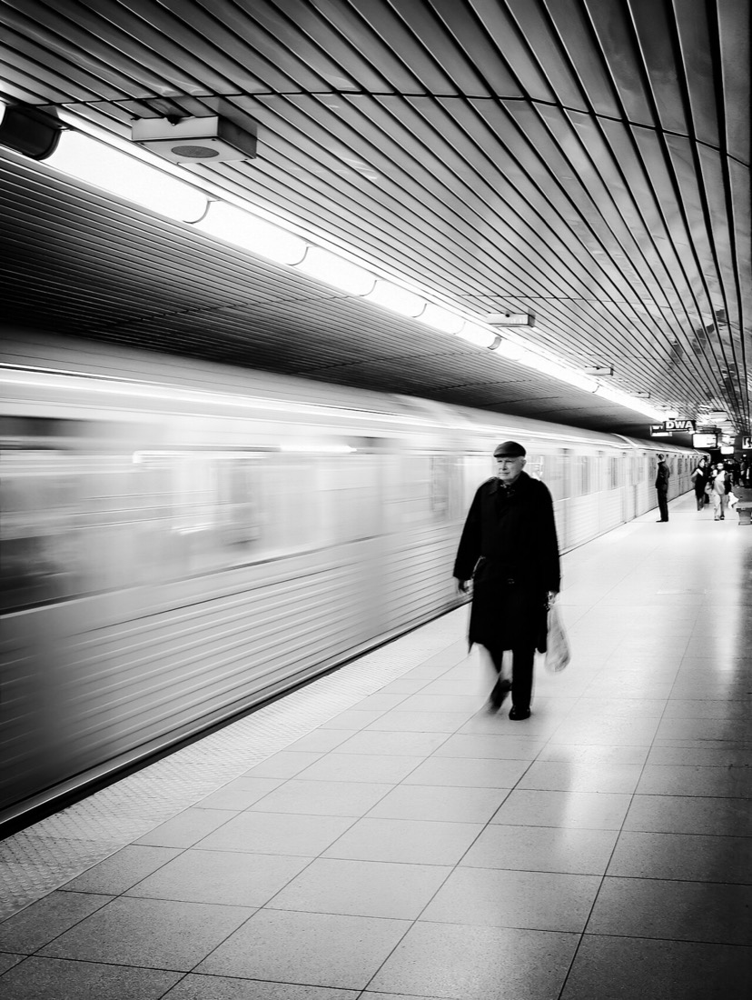
Man at Dundas subway station, Toronto
Radomianin, 2008
One shutter speed, two results. The train crossing the frame smears into streaks; the man walking toward the camera stays readable. Movement across the picture blurs far more than movement toward you. The ceiling lines all run to him.
Photo © Radomianin, CC BY-SA 4.0, via Wikimedia Commons. Resized.
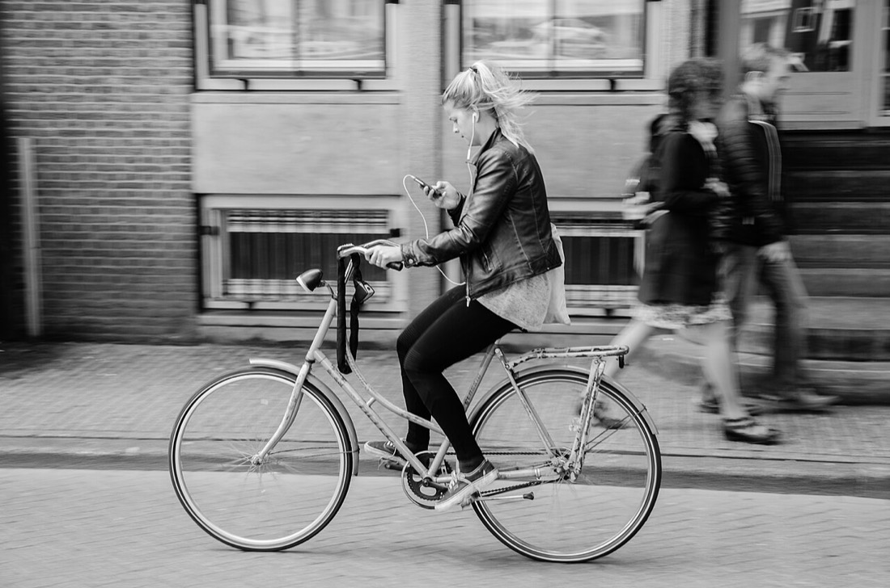
Cycling in Amsterdam
Alfredo Borba, 2014
Panning. The camera swung with the cyclist during a slow exposure, so she holds together while the street and the walkers behind her streak. She has room ahead of her to ride into.
Photo © Alfredo Borba, CC BY-SA 4.0, via Wikimedia Commons. Resized.
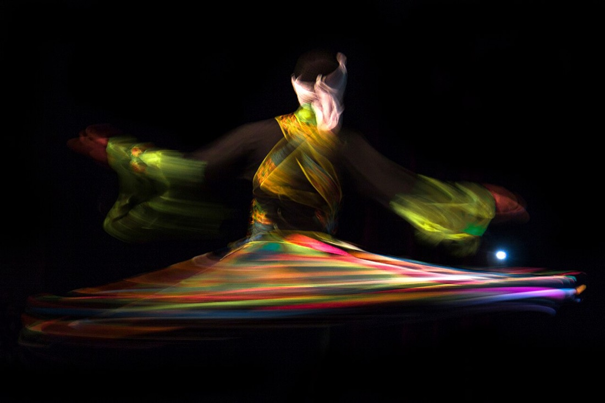
Tanoura dance
Mohamed Khalil90, 2018
Blur on purpose. A slow shutter speed turns the spinning skirt into bands of colour, while the dancer's head, the still centre of the spin, stays readable. The black background leaves nothing to compete.
Photo © Mohamed Khalil90, CC BY-SA 4.0, via Wikimedia Commons. Resized.
Cavapoo chasing a maltipoo with a ball
Rhododendrites, 2024
A very fast shutter speed: paws off the ground, ears flying, every hair sharp. Taken from low down, near the dogs' own height, with the focus following them as they ran at the camera.
Photo © Rhododendrites, CC BY-SA 4.0, via Wikimedia Commons. Resized.
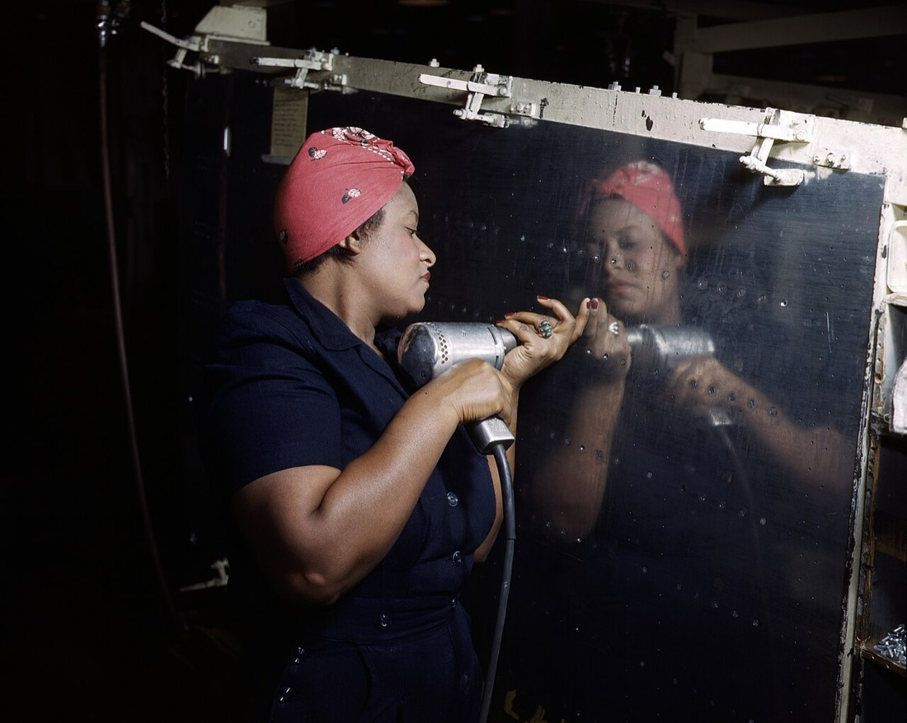
Operating a hand drill at Vultee-Nashville
Alfred T. Palmer, 1943
One hard light, and a background left to go black. The exposure is set for her skin and the red headscarf, not for the average of the scene. The polished metal gives a second portrait. One red against blue and black is all the colour it needs.
Public domain. Library of Congress, FSA/OWI collection, via Wikimedia Commons.
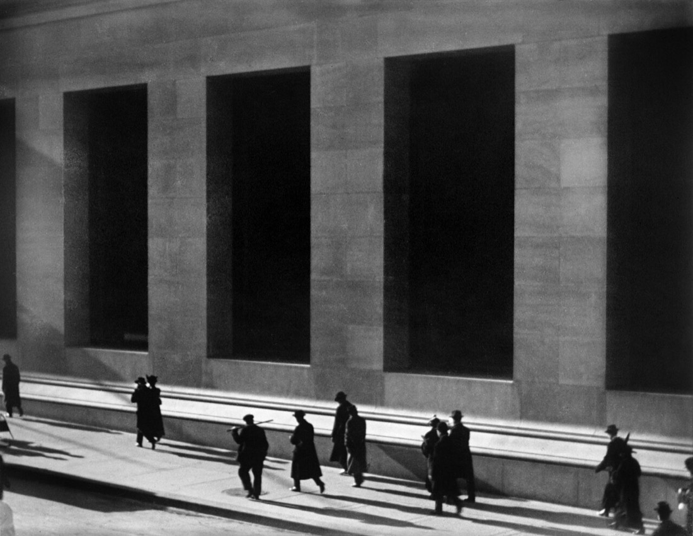
Wall Street, New York
Paul Strand, 1915
Low sun, long shadows, and people made small by the dark recesses above them. Exposed for the sunlit pavement, so the recesses go fully black. Taken from above; nobody knows they are in a picture.
Public domain. Library of Congress, via Wikimedia Commons.
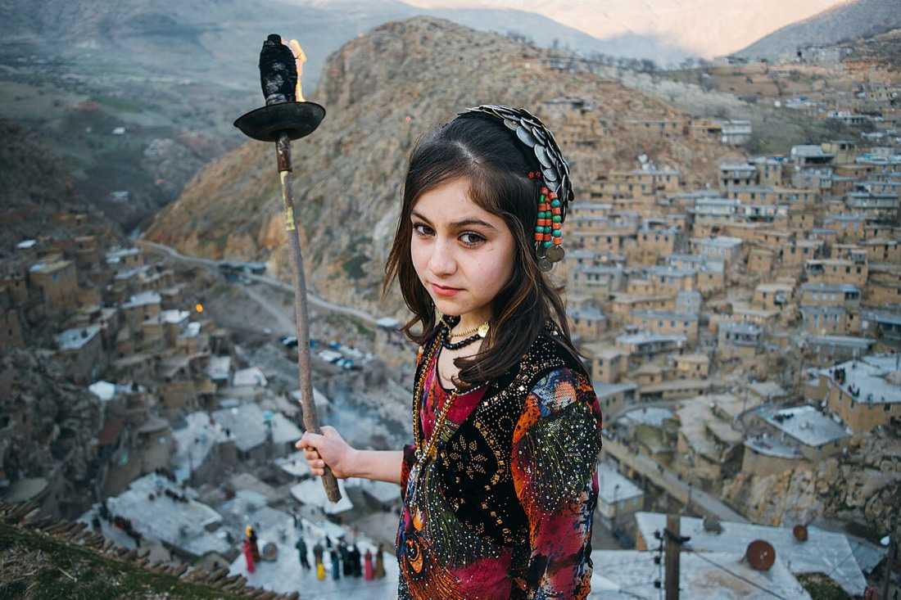
A village girl, Palangan, Kurdistan, Iran
Salar Arkan, 2017
Wide and close. She is large in the frame and the whole village still fits behind her: the place is her background, and the two layers explain each other. A longer lens from farther back would have shown her against a blur.
Photo © Salar Arkan, CC BY-SA 4.0, via Wikimedia Commons. Resized.
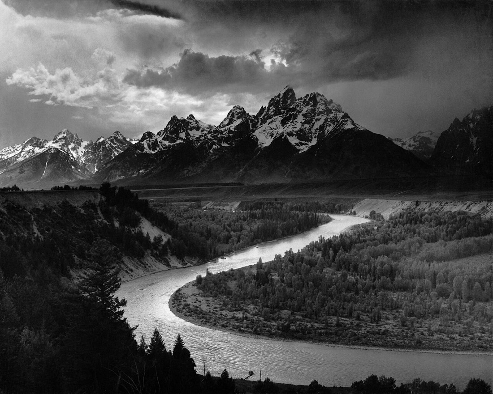
The Tetons and the Snake River
Ansel Adams, 1942
The river is a leading line, an S that carries the eye from the bottom edge to the peaks. Three layers: river, forest, mountains. Sharp from the near bank to the summits, which means a small aperture and a tripod.
Public domain. U.S. National Archives, National Park Service records, via Wikimedia Commons.
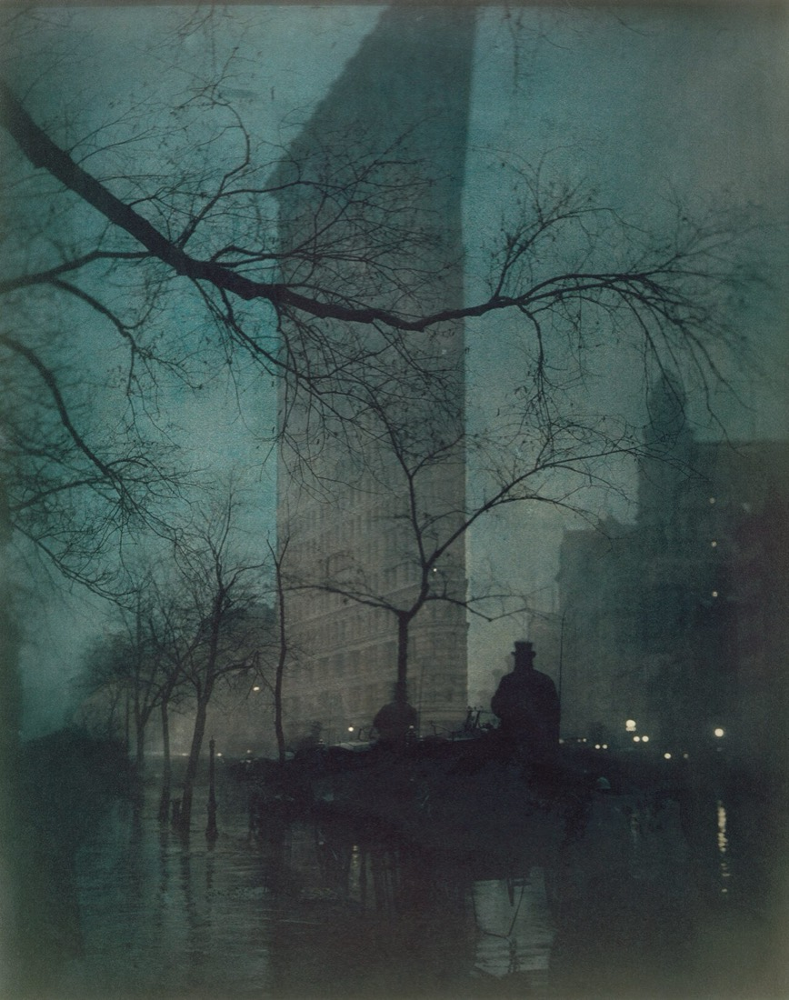
The Flatiron
Edward Steichen, 1904
Blue hour. There is enough light left in the sky to draw the building, the lamps have just come on, and the wet street doubles them. A branch across the top frames it, and a cab driver's silhouette gives it scale.
Public domain. Via Wikimedia Commons.
Neon signs at blue hour, Shinjuku, Tokyo
Basile Morin, 2019
Taken at blue hour, not at night. The sky still has colour, so the buildings have edges and the signs keep their detail. Half an hour later this is neon on black.
Photo © Basile Morin, CC BY-SA 4.0, via Wikimedia Commons. Resized.
Fishmonger, Maracaibo street market, Venezuela
Wilfredor, 2013
Close enough to be a conversation. He fills the frame, the market is reduced to soft shapes behind him, and the laugh says he knew he was being photographed and did not mind.
Photo by Wilfredor, released to the public domain (CC0), via Wikimedia Commons.
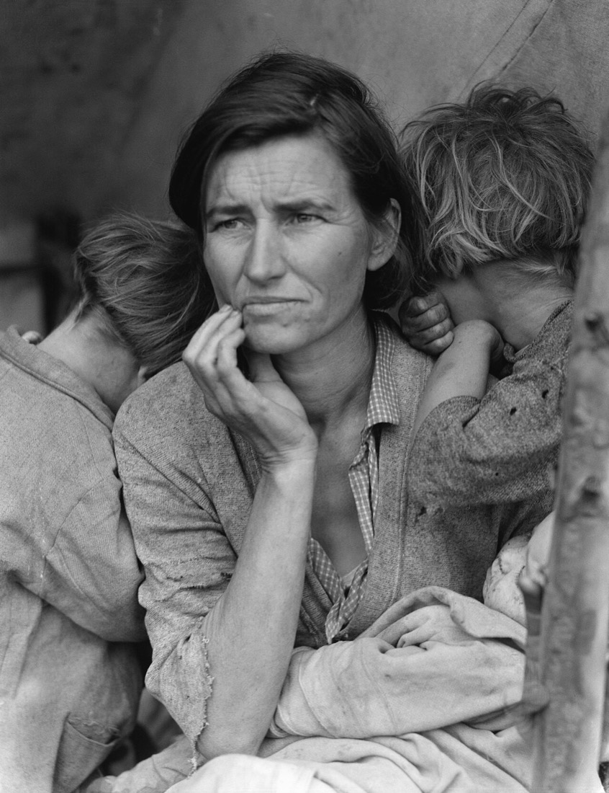
Migrant Mother
Dorothea Lange, 1936
Fill the frame and there is nothing to look at but her face. The children turn away, so everything leads back to her eyes and the hand at her chin. Lange worked closer with each frame she took.
Public domain. Library of Congress, FSA/OWI collection, via Wikimedia Commons.
Fisherman on his pirogue at sunrise, Si Phan Don, Laos
Basile Morin, 2019
Exposed for the sky, so the boat and the bushes go to silhouette. The boat sits low in the frame and left of centre, small against a great deal of water. The emptiness is the mood.
Photo © Basile Morin, CC BY-SA 4.0, via Wikimedia Commons. Resized.
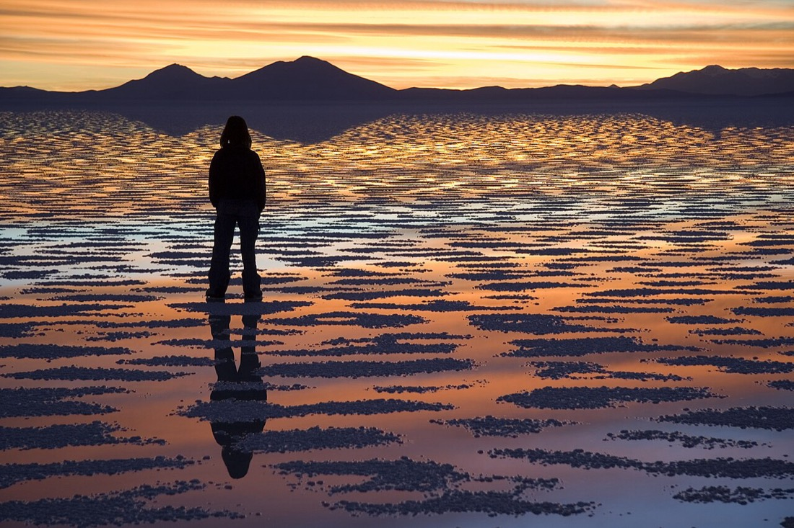
Watching sunset, Salar de Uyuni, Bolivia
Luca Galuzzi, 2006
A companion placed in the landscape, on a third and seen from behind, gives the place a scale and a feeling. The horizon sits high so the reflections get most of the frame.
Photo © Luca Galuzzi, CC BY-SA 2.5, via Wikimedia Commons. Resized.
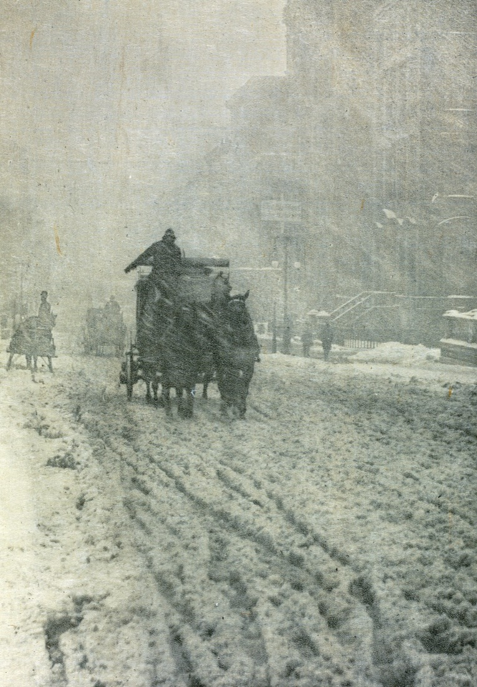
Winter, Fifth Avenue
Alfred Stieglitz, 1893
The ruts in the snow lead straight to the coach coming at you. A vertical frame for something moving toward the camera, with room in front of it. And the weather most people stay indoors for is the picture.
Public domain. Via Wikimedia Commons.
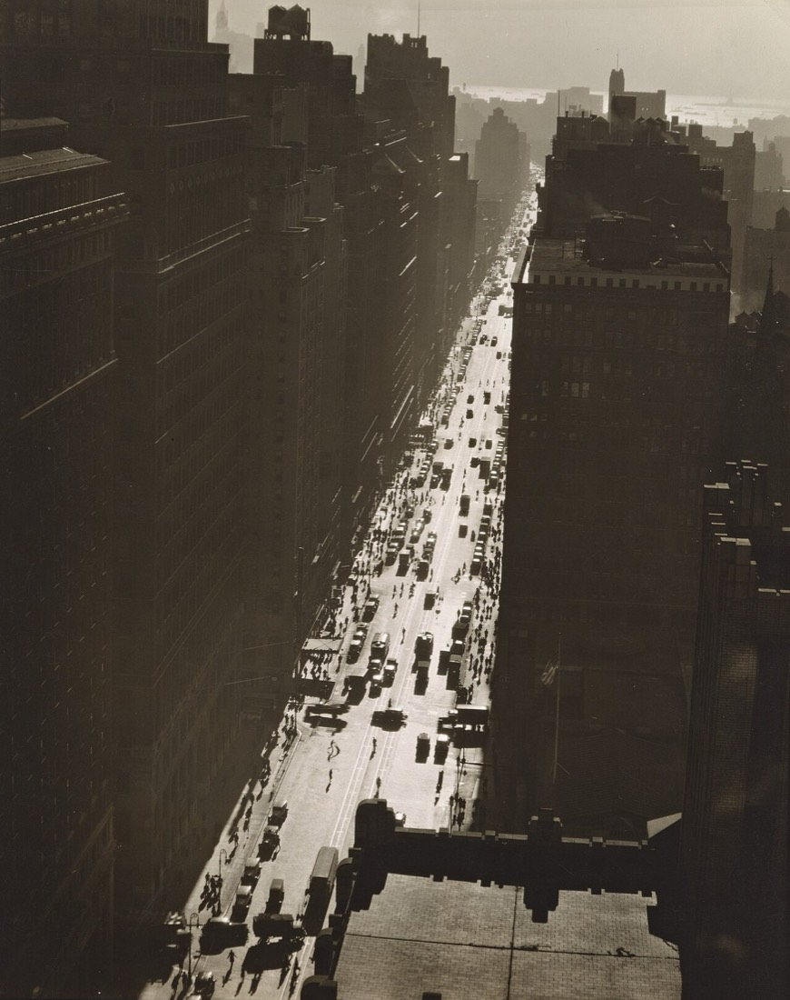
Seventh Avenue looking south from 35th Street
Berenice Abbott, 1935
A high viewpoint turns a street into a pattern. Low winter sun makes the avenue a line of light between buildings in silhouette, running all the way to the harbour. Exposed for the bright street, not the dark walls.
Public domain. New York Public Library, Changing New York, via Wikimedia Commons.
The Steerage
Alfred Stieglitz, 1907
Two crowds, one above the other, cut apart by the diagonal of the gangway. Look at the shapes before the people: a round straw hat, a slanting funnel, a ladder, crossed braces. The structure is what holds a crowded frame together.
Public domain. Via Wikimedia Commons.
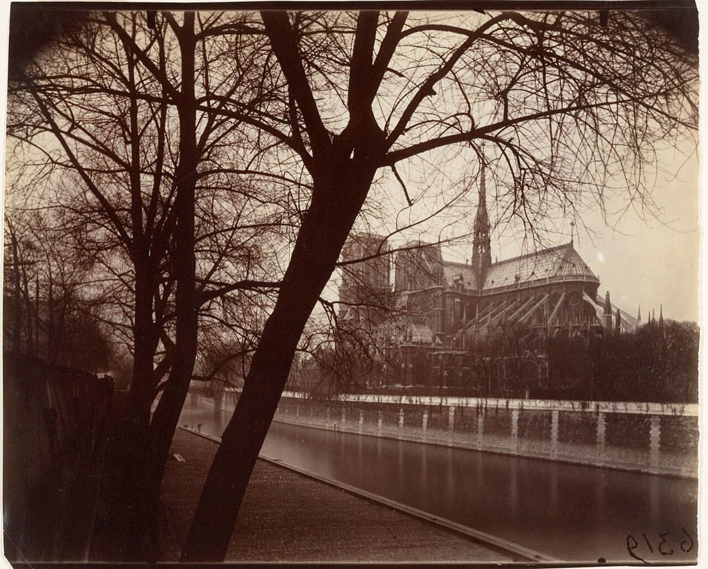
Notre-Dame
Eugène Atget, 1922
The landmark is small and at the back. The picture is the bare tree in front of it: a foreground that frames and half-screens the cathedral, with the quay leading in. A postcard subject, and not a postcard.
Public domain. The Metropolitan Museum of Art, via Wikimedia Commons.
Power house mechanic working on steam pump
Lewis Hine, 1920
A frame within the frame: the circle of the pump holds the man, and the curve of his back repeats it. Posed, lit from the side, every edge considered.
Public domain. U.S. National Archives, via Wikimedia Commons.
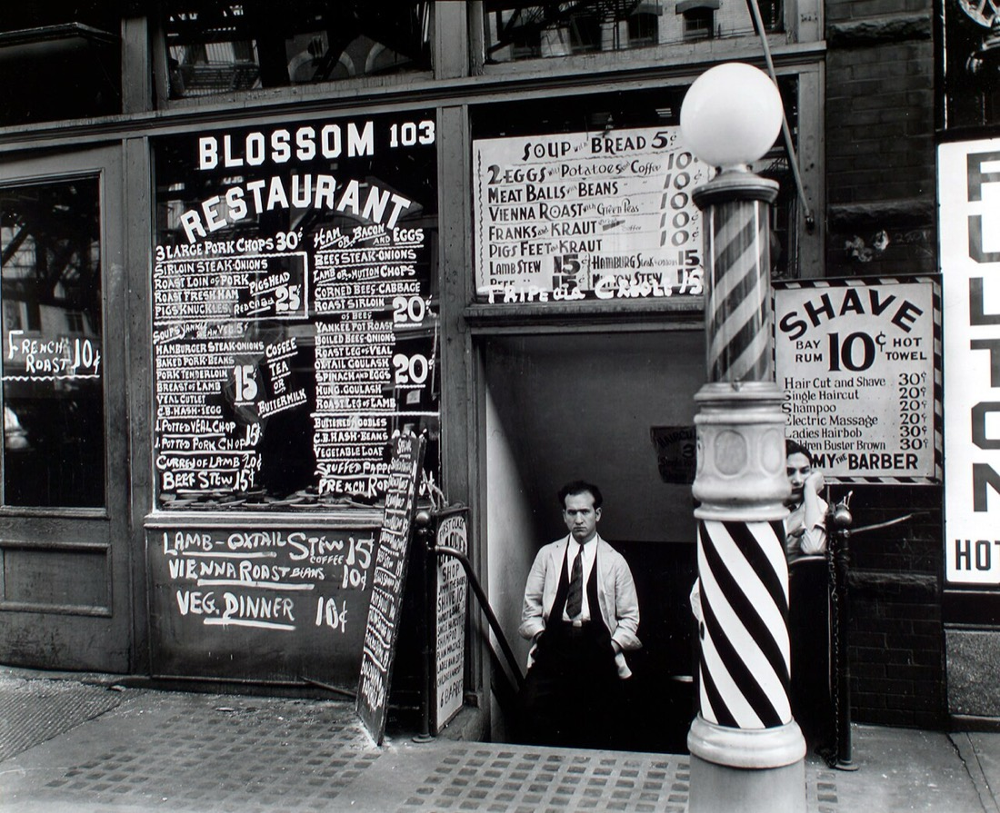
Blossom Restaurant, 103 Bowery
Berenice Abbott, 1935
Square-on, like a stage set. The doorway frames the man; the painted prices tell you the place and the year. The frame is full to the edges and still tidy, because the camera is level and everything is parallel to it.
Public domain. New York Public Library, Changing New York, via Wikimedia Commons.
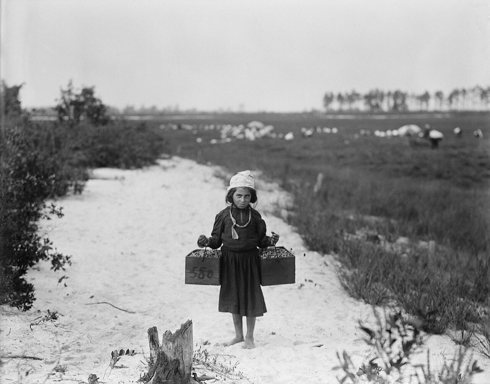
Rose Biodo, 10, carrying berries, Browns Mills, New Jersey
Lewis Hine, 1910
The camera is down at the child's height, so she meets your eye and the horizon sits at her shoulders, not above her head. The sandy path leads to her. The pickers behind are small and soft: context, not competition.
Public domain. Library of Congress, National Child Labor Committee collection, via Wikimedia Commons.
Laughing boy at golden hour, Don Det, Laos
Basile Morin, 2018
Low, warm sun from one side; the camera at the boy's eye level; a background far enough away to go soft. Vertical, for one person. The expression came from whatever was said a second earlier.
Photo © Basile Morin, CC BY-SA 4.0, via Wikimedia Commons. Resized.
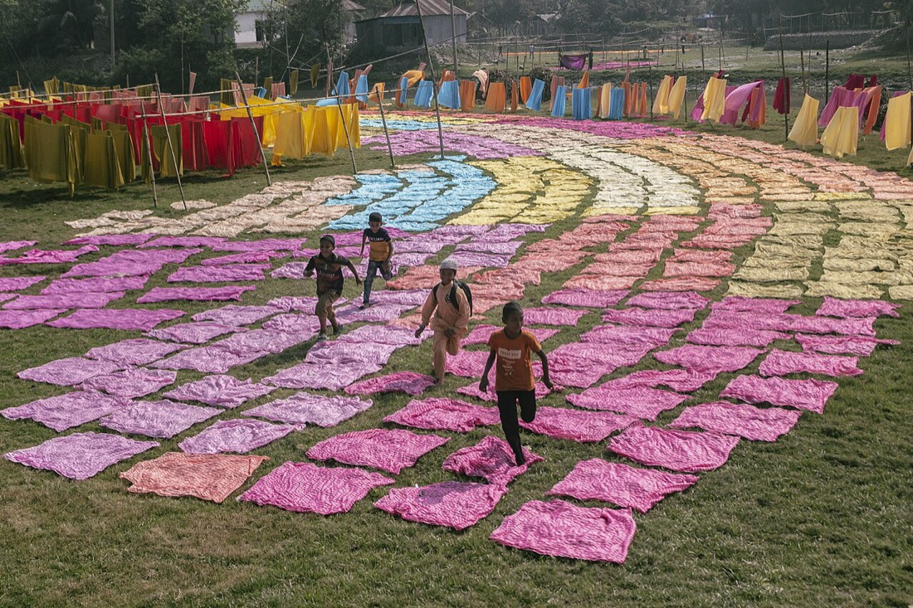
Children playing among drying cloth
Jubair Ahmed Arnob, 2021
A high viewpoint turns the drying cloth into a pattern, and a fast shutter speed freezes four children mid-stride across it. Each child is separate from the others; nobody overlaps.
Photo © Jubair Ahmed Arnob, CC BY-SA 4.0, via Wikimedia Commons. Resized.
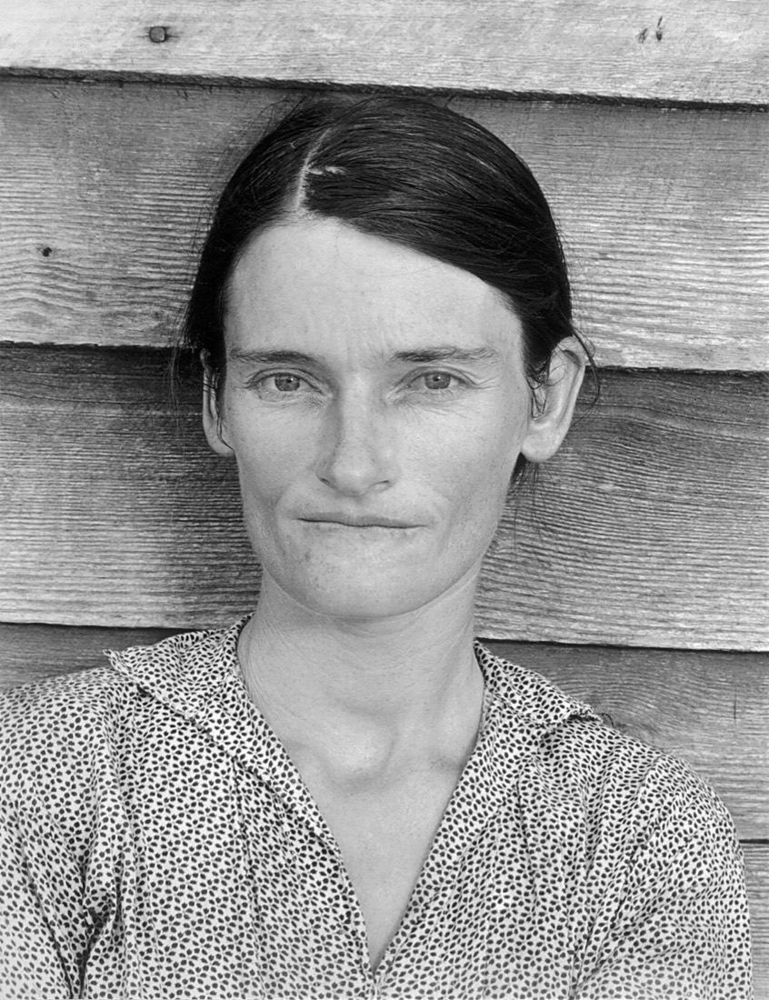
Allie Mae Burroughs
Walker Evans, 1936
The plainest portrait possible: head-on, at eye level, in open shade, against bare boards. The background has nothing in it, so the face has everything.
Public domain. Library of Congress, FSA/OWI collection, via Wikimedia Commons.
American Gothic, Washington, D.C.
Gordon Parks, 1942
Here the background is the point. Ella Watson with her broom and mop, in front of the flag: symmetrical, straight on, the flag soft but unmistakable. A portrait of someone in their place.
Public domain. Library of Congress, FSA/OWI collection, via Wikimedia Commons.
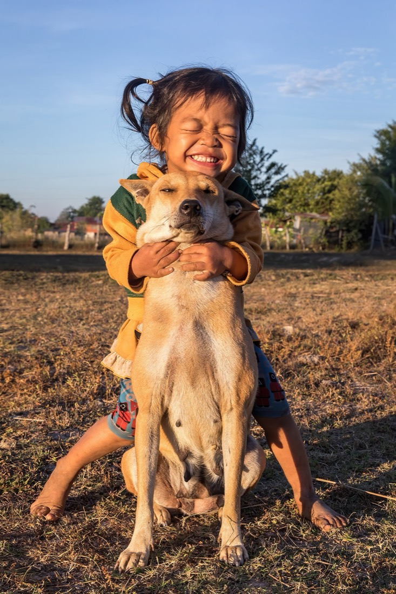
Girl hugging her dog at golden hour, Don Det, Laos
Basile Morin, 2023
Golden hour from the front: warm, even, kind to faces. The camera is low, level with the dog, so both of them stand against the sky. Vertical framing, and a moment nobody could have posed.
Photo © Basile Morin, CC BY-SA 4.0, via Wikimedia Commons. Resized.
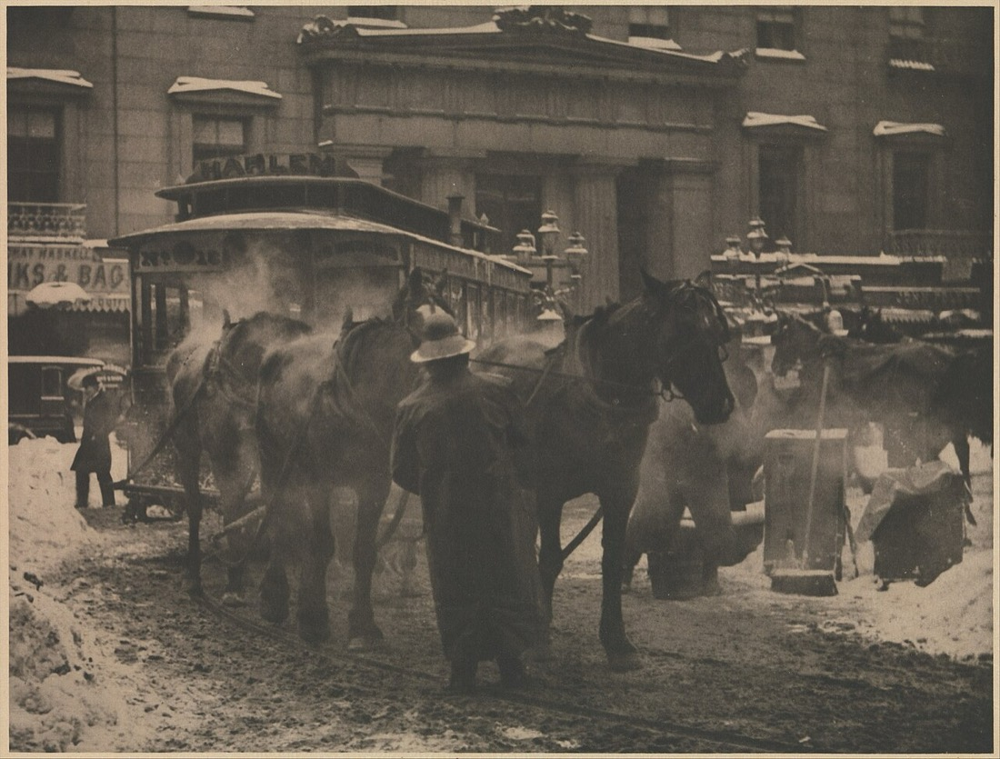
The Terminal
Alfred Stieglitz, 1893
A found moment: steam rising off the horses in the cold as the driver tends them. Bad weather makes good pictures. The team fills the middle of the frame and the building closes it off behind.
Public domain. The Metropolitan Museum of Art, via Wikimedia Commons.
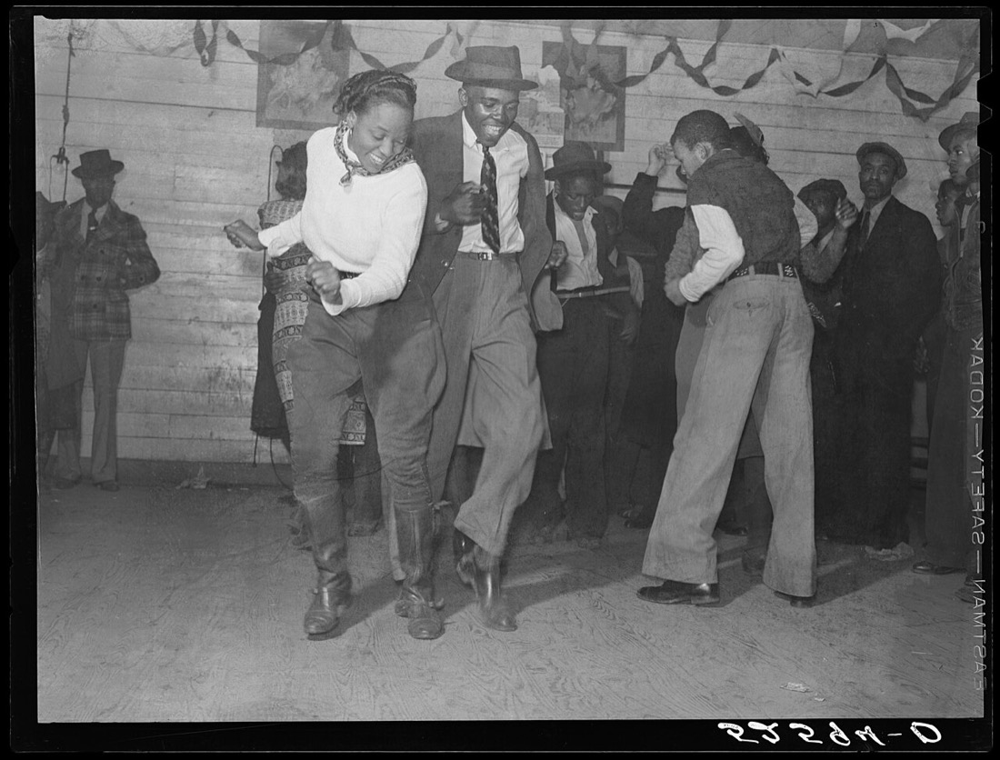
Jitterbugging in a juke joint, Clarksdale, Mississippi
Marion Post Wolcott, 1939
A flash freezes the dance mid-step: bent knees, lifted heels, a grin. The moment is the whole picture. Taken from inside the room, at the dancers' level, not from the doorway.
Public domain. Library of Congress, FSA/OWI collection, via Wikimedia Commons.
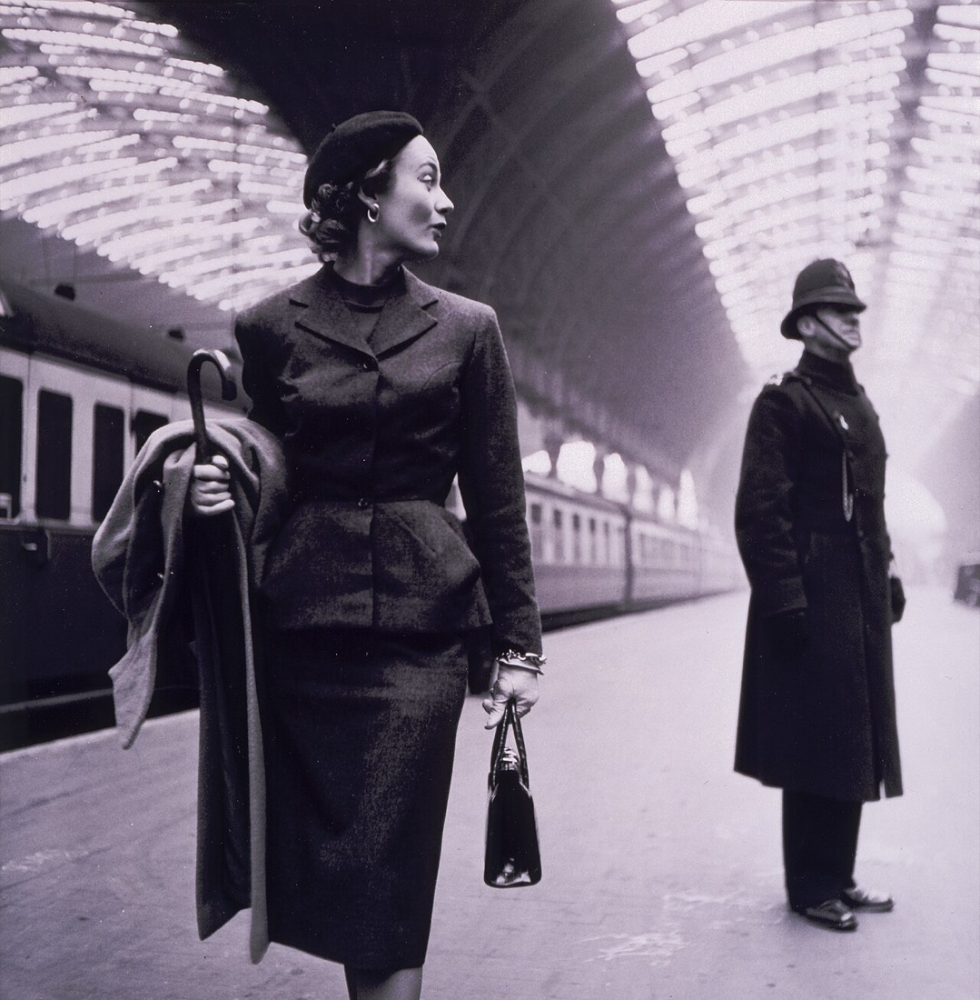
Paddington Station, London
Toni Frissell, 1951
She looks to the right and the space is on that side. The ribs of the roof converge behind her, and the policeman makes a second, softer layer that echoes her stance. Two figures and an empty platform say more than a crowd.
Public domain. Library of Congress, Toni Frissell collection, via Wikimedia Commons.
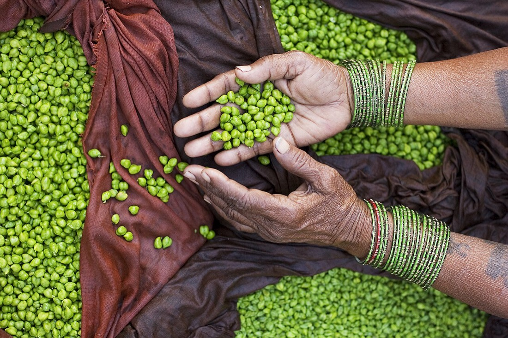
Green peas, Varanasi, India
Jorge Royan, 2005
The detail shot. No face and no street, and it still says market. Taken straight down, the hands on a diagonal, green against brown, the bangles repeating the green.
Photo © Jorge Royan / royan.com.ar, CC BY-SA 3.0, via Wikimedia Commons. Resized.
Restaurants, Place du Tertre, Paris
Pierre Blaché, 2019
A night street lit by its own cafés. The cobbles and awnings lead in from both sides; warm lamps sit against a blue-black sky. A long exposure on a steady support: note that nothing in it is moving fast.
Photo by Pierre Blaché, released to the public domain (CC0), via Wikimedia Commons.
Every photograph here is in the public domain or under a Creative Commons licence, and is credited beside the picture with a link to its source. The copies on this page have been resized. Where a licence says "share alike", the resized copy is offered under the same licence.
Glossary
- AF-S / AF-C
- Single autofocus (focus once and hold) and continuous autofocus (keep refocusing). Autofocus.
- Aperture
- The adjustable opening in the lens, written as an f-number. Smaller number, bigger hole. Aperture.
- APS-C
- Your sensor's size, 23.5 × 15.6 mm: about two-thirds the width of a 35mm film frame.
- Bokeh
- The look of the out-of-focus parts of a picture.
- Bracketing
- Taking several versions of one shot with a setting varied, to pick the best later.
- Chimping
- Checking the screen after every shot.
- Crop factor
- 1.5 for your camera. Multiply a focal length by it to get the full-frame lens with the same view.
- Depth of field
- The range of distances that look sharp. Depth of field.
- Diffraction
- Softening of the whole image at very small apertures (f/16 and beyond).
- Dynamic range
- The span from the darkest to the brightest tone a sensor can record at once.
- EV
- Exposure value: a number for a quantity of light. One EV is one stop.
- EVF
- Electronic viewfinder: the eyepiece, with a small screen inside.
- Exposure compensation
- Telling the camera to make its automatic exposure brighter or darker. The dial.
- Fill flash
- Flash used in daylight to lighten shadows on a face.
- Focal length
- The lens's angle of view, in millimetres. Small is wide. Focal length.
- Full frame
- A sensor the size of 35mm film, 36 × 24 mm. The usual yardstick for focal lengths.
- Golden hour / blue hour
- The hour of low sun after sunrise and before sunset; the twilight just beyond it.
- Histogram
- A bar chart of the tones in a picture, dark to light. Metering.
- Hyperfocal distance
- The focus distance that makes everything from half that distance to infinity sharp.
- ISO
- The sensor's amplification. Higher is brighter and grainier. ISO.
- JPEG / RAW
- A finished, compressed picture, and the sensor's undeveloped data.
- Metering
- The camera measuring the light to choose an exposure.
- OIS
- Optical image stabilisation: a moving element in the lens that counters hand shake.
- Prime
- A lens with one focal length. Usually smaller and brighter than a zoom.
- Recipe
- A film simulation plus a set of tone and colour adjustments, saved together.
- Shutter speed
- How long the sensor is exposed. Shutter speed.
- Stop
- A doubling or halving of light. Exposure.
- White balance
- Correcting for the colour of the light so that white things look white. Light.
- Zone focusing
- Presetting focus and aperture so a known range of distances is sharp, and shooting without autofocus.
About this course
Designed, written and built by Claude Fable 5.2 (High), Anthropic's AI model, working in Claude Code in November 2026, to a brief from nomagicpill: a course for a new X-T30 III owner who wants to get better at street, travel and family photography. The 3D camera, the town, the optics and every word are its work, and so are any mistakes.
What is real and what is simulated
- The camera's controls and specifications follow Fujifilm's owner's manual and specification sheet for the X-T30 III, and Fujifilm's page for the XC 13-33mm lens, checked in November 2026. The 3D model is built by hand from simple shapes: proportions and positions are right, fine details are not. The order of the marks on the film simulation dial may differ from your camera's. Firmware updates can change menus.
- The viewfinder uses the real formulas: exposure in stops against the light level of the scene; depth of field from the thin-lens equations with a 0.02 mm circle of confusion; motion blur and hand shake by averaging many instants across the exposure; noise that grows with ISO. The lens's widest aperture between 13mm and 33mm is interpolated, since Fujifilm publishes only the two ends. Noise is exaggerated a little so it shows at screen size.
- Film simulations on screen are approximations of each one's character, not Fujifilm's colour science.
- The photographs in the gallery are real, and none are mine or nomagicpill's. Each is in the public domain or under a Creative Commons licence, came from Wikimedia Commons, and is credited beside the picture with its licence and a link to its source. The notes on what to notice are this course's reading of them, not the photographers' own words.
- Reading your photo's settings happens entirely in your browser. The film simulation and the camera's own blur and focus warnings come from Fujifilm's maker notes, decoded using the tag tables published by the ExifTool project; if a firmware update changes them, those two may read wrongly while the standard settings will not.
- Menu advice (Auto ISO values, which simulation for what) is opinion, of the kind an experienced friend would give. Change it when you know better.
Sources
- Fujifilm, X-T30 III Owner's Manual: parts of the camera, function controls, autofocus, ISO, shooting modes, button and dial settings.
- Fujifilm, X-T30 III specifications.
- Fujifilm, XC13-33mmF3.5-6.3 OIS: optical design, stabilisation, close focus.
- Photography Blog, Fujifilm XC 13-33mm F3.5-6.3 OIS review: the lens's rings and handling.
- The depth-of-field, hyperfocal and exposure-value formulas are the standard ones, as in any optics text.
- Phil Harvey, ExifTool: FujiFilm tags: the layout and values of Fujifilm's maker notes.
- Wikimedia Commons, the Library of Congress, the U.S. National Archives, the New York Public Library and the Metropolitan Museum of Art: the photographs, credited individually in the gallery.
The 3D view uses three.js, served from this site.